8 Confirmatory Factor Analysis and Structural Equation Models
R code for this chapter: cfa_sem_figures.R (data and figures) and _common.R (shared helpers). Save both in one folder and run source("cfa_sem_figures.R"); every figure is then one function call, as shown under the Code buttons.
Slides for this chapter: cfa_sem_slides.html (opens in a new tab; use the arrow keys to move between slides).
The Introduction showed that the data never fix the structural matrix \(A\) of \(\mathbf x_t=A\boldsymbol\varepsilon_t\): every turn of \(A\) fits them equally well (Section 1.3), so an extra restriction has to pick one (Section 1.4). Some of the restrictions there came from knowledge about the problem: the order of education and earnings, the random pairing of roommates, and the aircraft manual’s fuel flow, which fixed the direction of the headwind arrow of the flights. The methods since then mostly used conventions instead. PCA made the first column of \(A\) as long as possible, and exploratory factor analysis turned the factors until varimax or promax was satisfied. Conventions make the result easy to describe, but they do not say why the variables move together.
This chapter returns to restrictions from knowledge and builds whole models from them. The analyst writes down in advance which latent variable moves which observed variable, and which variables affect which. Every effect that is not written down is set to zero. The data then estimate the rest and test whether the zeros hold. Three families of models work this way:
- Confirmatory factor analysis (CFA, Sections 8.1 to 8.3): the factor model of Chapter 6, with zeros in the loadings fixed by theory instead of a turn chosen by a rotation.
- Simultaneous equations (Section 8.4): observed variables that affect each other, such as the price and the quantity sold in a market.
- Structural equation models (SEM, Section 8.5): both at once, effects between latent variables that are measured by observed ones.
All three are estimated by the maximum likelihood of factor analysis, tested by the same chi-square test, and drawn
as path diagrams, the pictures of Section 6.2. Everitt and Hothorn cover them in Chapter 7, and in R they
are fitted with the package lavaan (Rosseel 2012).
8.1 Theory writes the zeros
8.1.1 Six tests, two abilities, again
Section 6.6 simulated the scores of 200 students on six tests: three verbal tests
(reading, vocabulary and grammar) and three mathematics tests (arithmetic, algebra and geometry). Each test depended on
one ability only, with loadings 0.8, 0.7 and 0.6, and the two abilities had a correlation of 0.5. factanal() was told
the scores and the number of factors, but not which test is which. It found the two groups of tests anyway, promax
tilted the axes through them, and the names came afterwards, from what the tests ask. The cross-loadings, the loadings
of a test on the other ability, came out small, between −0.06 and 0.07, but not
zero.
The exploratory model lets every factor move every test. A confirmatory model says what the tests were built for: reading, vocabulary and grammar measure verbal ability and nothing else, and the mathematics tests measure mathematical ability and nothing else. The path diagrams show the difference. As in Chapter 6, circles are unobserved, boxes are measured, each arrow points from a cause to what it moves, and the curved double arrow is a correlation. The confirmatory model simply has fewer arrows:
path_diagram <- function(nodes, edges, r_lat = 0.45, r_err = 0.2, h = 0.22, size = 3.9) {
N <- split(nodes, nodes$id)
bpt <- function(n, ux, uy) { # where a line from the centre of node n, direction (ux, uy), leaves it
if (n$type == "lat") return(c(n$x + r_lat * ux, n$y + r_lat * uy))
if (n$type == "err") return(c(n$x + r_err * ux, n$y + r_err * uy))
if (n$type == "pt") return(c(n$x, n$y))
t <- min(if (abs(ux) > 1e-9) n$w / abs(ux) else Inf, if (abs(uy) > 1e-9) h / abs(uy) else Inf)
c(n$x + t * ux, n$y + t * uy)
}
rot <- function(u, a) c(cos(a) * u[1] - sin(a) * u[2], sin(a) * u[1] + cos(a) * u[2])
geo <- purrr::pmap_dfr(edges, function(from, to, label, col, kind, curv, lty, lpos) {
a <- N[[from]]; b <- N[[to]]; u <- c(b$x - a$x, b$y - a$y); u <- u / sqrt(sum(u^2))
ang <- -sign(curv) * atan(2 * abs(curv)) # leave each node along the tangent of the curve
d0 <- rot(u, ang); d1 <- rot(-u, -ang)
p0 <- bpt(a, d0[1], d0[2]); p1 <- bpt(b, d1[1], d1[2])
half <- sqrt(sum((p1 - p0)^2)) / 2
m <- p0 + lpos * (p1 - p0) - curv * half * c(-u[2], u[1]) * (1 - (2 * lpos - 1)^2)
tibble(from, to, kind, col, lty, label, curv, x0 = p0[1], y0 = p0[2], x1 = p1[1], y1 = p1[2], lx = m[1], ly = m[2])
})
circ <- function(n, r) purrr::pmap_dfr(n, function(id, x, y, ...)
tibble(id = id, t = seq(0, 2 * pi, length.out = 100), x = x + r * cos(t), y = y + r * sin(t)))
L <- filter(nodes, type == "lat"); O <- filter(nodes, type == "obs"); E <- filter(nodes, type == "err")
straight <- filter(geo, kind == "dir", curv == 0); curved <- filter(geo, kind == "cov" | curv != 0)
p <- ggplot() + geom_blank(data = geo, aes(lx, ly)) + scale_colour_identity() + coord_equal(clip = "off") + theme_void()
if (nrow(L)) p <- p + geom_polygon(data = left_join(circ(L, r_lat), select(L, id, col), by = "id"),
aes(x, y, group = id, colour = col), fill = "#f6f3fa", linewidth = 1) +
geom_text(data = L, aes(x, y, label = label, colour = col), size = size + 0.7, fontface = "bold")
if (nrow(straight)) p <- p + geom_segment(data = straight, aes(x0, y0, xend = x1, yend = y1, colour = col, linetype = lty),
linewidth = 0.85, arrow = arrow(length = unit(0.17, "cm"), type = "closed"))
for (i in seq_len(nrow(curved))) p <- p +
annotate("curve", x = curved$x0[i], y = curved$y0[i], xend = curved$x1[i], yend = curved$y1[i],
curvature = curved$curv[i], colour = curved$col[i], linewidth = 0.8, linetype = curved$lty[i],
arrow = arrow(length = unit(0.16, "cm"), type = "closed", ends = if (curved$kind[i] == "cov") "both" else "last"))
lab <- filter(geo, label != "")
if (nrow(lab)) p <- p + geom_label(data = lab, aes(lx, ly, label = label, colour = col), size = size - 0.1,
label.size = 0, label.padding = unit(0.1, "lines"), fill = "white")
if (nrow(O)) p <- p + geom_rect(data = O, aes(xmin = x - w, xmax = x + w, ymin = y - h, ymax = y + h),
fill = "white", colour = "#2c3e50", linewidth = 0.8) +
geom_text(data = O, aes(x, y, label = label), size = size, colour = "#2c3e50")
if (nrow(E)) p <- p + geom_polygon(data = circ(E, r_err), aes(x, y, group = id), fill = "#f2f2f2", colour = "grey45",
linewidth = 0.7) +
geom_text(data = E, aes(x, y, label = label), size = size - 0.1, colour = "grey25") +
geom_text(data = filter(E, sub != ""), aes(x + sdx, y + sdy, label = sub, colour = subcol), size = size - 0.3)
p + scale_linetype_identity()
}
cov2 <- function(from, to, label = "", curv = -0.3, col = "grey35", lty = "solid")
tibble(from = from, to = to, label = label, col = col, kind = "cov", curv = curv, lty = lty, lpos = 0.5)
eff <- function(from, to, label = "", col = "#2c3e50", lty = "solid", lpos = 0.6, curv = 0)
tibble(from = from, to = to, label = label, col = col, kind = "dir", curv = curv, lty = lty, lpos = lpos)
lat <- function(id, x, y, label = id, col = col_f)
tibble(id = id, type = "lat", x = x, y = y, label = label, col = col, sub = "", w = NA_real_, sdx = 0, sdy = 0)
sub_digit <- function(i) chartr("0123456789", "₀₁₂₃₄₅₆₇₈₉", as.character(i))
eff <- function(from, to, label = "", col = "#2c3e50", lty = "solid", lpos = 0.6, curv = 0)
tibble(from = from, to = to, label = label, col = col, kind = "dir", curv = curv, lty = lty, lpos = lpos)
sub_digit <- function(i) chartr("0123456789", "₀₁₂₃₄₅₆₇₈₉", as.character(i))
err <- function(id, x, y, label, sub = "", sdx = 0, sdy = -0.36)
tibble(id = id, type = "err", x = x, y = y, label = label, col = "grey45", sub = sub, w = NA_real_, sdx = sdx, sdy = sdy,
subcol = ifelse(grepl("\u2212", sub), col_a2, "grey30"))
own_shocks <- function(vars, y = -0.1, sub = "", idx = seq_len(nrow(vars))) {
list(nodes = err(paste0("u_", vars$id), vars$x, y, paste0("u", sub_digit(idx)), sub = sub),
edges = eff(paste0("u_", vars$id), vars$id, col = "grey45"))
}
lat <- function(id, x, y, label = id, col = col_f)
tibble(id = id, type = "lat", x = x, y = y, label = label, col = col, sub = "", w = NA_real_, sdx = 0, sdy = 0)
obs <- function(id, x, y, label = id, w = 0.52)
tibble(id = id, type = "obs", x = x, y = y, label = label, col = "#2c3e50", sub = "", w = w, sdx = 0, sdy = 0)
tests_layout <- function() {
vars <- obs(tests_items, c(1, 2.2, 3.4, 4.9, 6.1, 7.3), 1)
facs <- lat(c("verbal", "math"), c(2.2, 6.1), 2.45, col = c(col_verb, col_math))
list(vars = vars, facs = facs)
}
fig_efa_cfa <- function(ncol = 1) {
l <- tests_layout(); u <- own_shocks(l$vars, sub = paste0("\u03c8", sub_digit(1:6)))
f_efa <- lat(c("verbal", "math"), c(2.2, 6.1), 2.45, label = c("factor 1", "factor 2"), col = col_f)
e_efa <- bind_rows(eff(rep(c("verbal", "math"), each = 6), rep(tests_items, 2), col = col_f, lpos = 0.5), u$edges)
lam <- paste0("\u03bb", sub_digit(1:6))
e_cfa <- bind_rows(eff("verbal", tests_items[1:3], lam[1:3], col_verb), eff("math", tests_items[4:6], lam[4:6], col_math),
u$edges, cov2("verbal", "math", "\u03c6"))
ttl <- function(t, s) labs(title = t, subtitle = s)
p1 <- path_diagram(bind_rows(f_efa, l$vars, u$nodes), e_efa, size = 3.7) +
ttl("Exploratory (Chapter 6)", "every factor may move every test: 12 loadings, named only afterwards")
p2 <- path_diagram(bind_rows(l$facs, l$vars, u$nodes), e_cfa, size = 3.7) +
ttl("Confirmatory", "each test measures one ability: 6 loadings, 6 zeros (no arrow), and a correlation")
(if (ncol == 1) p1 / p2 else p1 | p2) & # stacked in the notes, side by side on slides
theme(plot.title = element_text(face = "bold", size = 13), plot.subtitle = element_text(size = 11))
}
# draw the figure
fig_efa_cfa()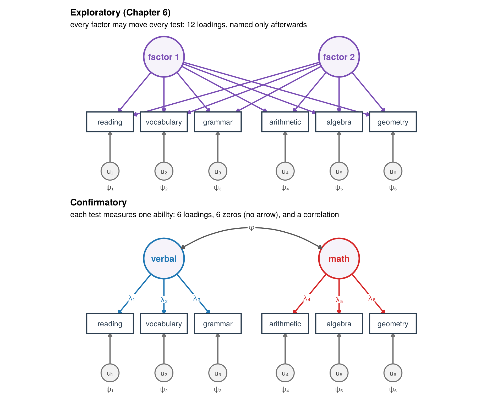
8.1.2 Writing the model down
Write \(f_{t1}\) for the verbal and \(f_{t2}\) for the mathematical ability of student \(t\), and \(u_{ti}\) for the unique shock of test \(i\), with variance \(\psi_i\), as in Chapter 6. The six equations of the confirmatory model are
\[ \begin{aligned} x_{t1}&=\lambda_1f_{t1}+0\cdot f_{t2}+u_{t1} &&\text{(reading)}\\ x_{t2}&=\lambda_2f_{t1}+0\cdot f_{t2}+u_{t2} &&\text{(vocabulary)}\\ x_{t3}&=\lambda_3f_{t1}+0\cdot f_{t2}+u_{t3} &&\text{(grammar)}\\ x_{t4}&=0\cdot f_{t1}+\lambda_4f_{t2}+u_{t4} &&\text{(arithmetic)}\\ x_{t5}&=0\cdot f_{t1}+\lambda_5f_{t2}+u_{t5} &&\text{(algebra)}\\ x_{t6}&=0\cdot f_{t1}+\lambda_6f_{t2}+u_{t6} &&\text{(geometry)} \end{aligned} \]
The zeros are the theory. Everitt and Hothorn (Section 7.3.1) write a confirmatory model the same way, with the zeros spelled out, for six measures of the ability and aspiration of 556 students: four measures of ability and two of aspiration, with the two latent variables correlated. In matrix form, \(\mathbf x_t=\Lambda\mathbf f_t+\mathbf u_t\) with
\[ \Lambda=\begin{pmatrix}\lambda_1&0\\ \lambda_2&0\\ \lambda_3&0\\ 0&\lambda_4\\ 0&\lambda_5\\ 0&\lambda_6\end{pmatrix},\qquad \operatorname{Var}(\mathbf f_t)=\Phi=\begin{pmatrix}1&\varphi\\ \varphi&1\end{pmatrix},\qquad \operatorname{Var}(\mathbf u_t)=\Psi=\operatorname{diag}(\psi_1,\dots,\psi_6), \]
where \(\varphi\) (phi) is the correlation of the two abilities. As for promax (Section 6.6.5), the covariance matrix of the six scores is
\[ \Sigma=\Lambda\Phi\Lambda'+\Psi . \]
A path diagram draws these equations. Every arrow stands for a free parameter, and a missing arrow for a zero:
path_diagram <- function(nodes, edges, r_lat = 0.45, r_err = 0.2, h = 0.22, size = 3.9) {
N <- split(nodes, nodes$id)
bpt <- function(n, ux, uy) { # where a line from the centre of node n, direction (ux, uy), leaves it
if (n$type == "lat") return(c(n$x + r_lat * ux, n$y + r_lat * uy))
if (n$type == "err") return(c(n$x + r_err * ux, n$y + r_err * uy))
if (n$type == "pt") return(c(n$x, n$y))
t <- min(if (abs(ux) > 1e-9) n$w / abs(ux) else Inf, if (abs(uy) > 1e-9) h / abs(uy) else Inf)
c(n$x + t * ux, n$y + t * uy)
}
rot <- function(u, a) c(cos(a) * u[1] - sin(a) * u[2], sin(a) * u[1] + cos(a) * u[2])
geo <- purrr::pmap_dfr(edges, function(from, to, label, col, kind, curv, lty, lpos) {
a <- N[[from]]; b <- N[[to]]; u <- c(b$x - a$x, b$y - a$y); u <- u / sqrt(sum(u^2))
ang <- -sign(curv) * atan(2 * abs(curv)) # leave each node along the tangent of the curve
d0 <- rot(u, ang); d1 <- rot(-u, -ang)
p0 <- bpt(a, d0[1], d0[2]); p1 <- bpt(b, d1[1], d1[2])
half <- sqrt(sum((p1 - p0)^2)) / 2
m <- p0 + lpos * (p1 - p0) - curv * half * c(-u[2], u[1]) * (1 - (2 * lpos - 1)^2)
tibble(from, to, kind, col, lty, label, curv, x0 = p0[1], y0 = p0[2], x1 = p1[1], y1 = p1[2], lx = m[1], ly = m[2])
})
circ <- function(n, r) purrr::pmap_dfr(n, function(id, x, y, ...)
tibble(id = id, t = seq(0, 2 * pi, length.out = 100), x = x + r * cos(t), y = y + r * sin(t)))
L <- filter(nodes, type == "lat"); O <- filter(nodes, type == "obs"); E <- filter(nodes, type == "err")
straight <- filter(geo, kind == "dir", curv == 0); curved <- filter(geo, kind == "cov" | curv != 0)
p <- ggplot() + geom_blank(data = geo, aes(lx, ly)) + scale_colour_identity() + coord_equal(clip = "off") + theme_void()
if (nrow(L)) p <- p + geom_polygon(data = left_join(circ(L, r_lat), select(L, id, col), by = "id"),
aes(x, y, group = id, colour = col), fill = "#f6f3fa", linewidth = 1) +
geom_text(data = L, aes(x, y, label = label, colour = col), size = size + 0.7, fontface = "bold")
if (nrow(straight)) p <- p + geom_segment(data = straight, aes(x0, y0, xend = x1, yend = y1, colour = col, linetype = lty),
linewidth = 0.85, arrow = arrow(length = unit(0.17, "cm"), type = "closed"))
for (i in seq_len(nrow(curved))) p <- p +
annotate("curve", x = curved$x0[i], y = curved$y0[i], xend = curved$x1[i], yend = curved$y1[i],
curvature = curved$curv[i], colour = curved$col[i], linewidth = 0.8, linetype = curved$lty[i],
arrow = arrow(length = unit(0.16, "cm"), type = "closed", ends = if (curved$kind[i] == "cov") "both" else "last"))
lab <- filter(geo, label != "")
if (nrow(lab)) p <- p + geom_label(data = lab, aes(lx, ly, label = label, colour = col), size = size - 0.1,
label.size = 0, label.padding = unit(0.1, "lines"), fill = "white")
if (nrow(O)) p <- p + geom_rect(data = O, aes(xmin = x - w, xmax = x + w, ymin = y - h, ymax = y + h),
fill = "white", colour = "#2c3e50", linewidth = 0.8) +
geom_text(data = O, aes(x, y, label = label), size = size, colour = "#2c3e50")
if (nrow(E)) p <- p + geom_polygon(data = circ(E, r_err), aes(x, y, group = id), fill = "#f2f2f2", colour = "grey45",
linewidth = 0.7) +
geom_text(data = E, aes(x, y, label = label), size = size - 0.1, colour = "grey25") +
geom_text(data = filter(E, sub != ""), aes(x + sdx, y + sdy, label = sub, colour = subcol), size = size - 0.3)
p + scale_linetype_identity()
}
cov2 <- function(from, to, label = "", curv = -0.3, col = "grey35", lty = "solid")
tibble(from = from, to = to, label = label, col = col, kind = "cov", curv = curv, lty = lty, lpos = 0.5)
eff <- function(from, to, label = "", col = "#2c3e50", lty = "solid", lpos = 0.6, curv = 0)
tibble(from = from, to = to, label = label, col = col, kind = "dir", curv = curv, lty = lty, lpos = lpos)
pt <- function(id, x, y) # an invisible anchor, for arrows that start or end anywhere
tibble(id = id, type = "pt", x = x, y = y, label = "", col = NA_character_, sub = "", w = NA_real_, sdx = 0, sdy = 0)
err <- function(id, x, y, label, sub = "", sdx = 0, sdy = -0.36)
tibble(id = id, type = "err", x = x, y = y, label = label, col = "grey45", sub = sub, w = NA_real_, sdx = sdx, sdy = sdy,
subcol = ifelse(grepl("\u2212", sub), col_a2, "grey30"))
lat <- function(id, x, y, label = id, col = col_f)
tibble(id = id, type = "lat", x = x, y = y, label = label, col = col, sub = "", w = NA_real_, sdx = 0, sdy = 0)
obs <- function(id, x, y, label = id, w = 0.52)
tibble(id = id, type = "obs", x = x, y = y, label = label, col = "#2c3e50", sub = "", w = w, sdx = 0, sdy = 0)
fig_path_legend <- function() {
n <- bind_rows(obs("o", 0.6, 0, "measured", w = 0.55), lat("l", 2.5, 0, "latent", col = col_f),
err("e", 4.1, 0, "u"), pt("a1", 5.6, 0), pt("a2", 7.0, 0), pt("c1", 8.4, -0.1), pt("c2", 9.8, -0.1))
e <- bind_rows(eff("a1", "a2"), cov2("c1", "c2", curv = -0.5))
path_diagram(n, e, size = 3.7) +
annotate("text", x = c(0.6, 2.5, 4.1, 6.3, 9.1), y = -0.75, size = 3.5, colour = "grey25", lineheight = 0.95,
label = c("a variable we\nobserve", "a variable we do\nnot observe", "a variable's\nown shock",
"an effect: a\ncoefficient", "a covariance or\na correlation"))
}
# draw the figure
fig_path_legend()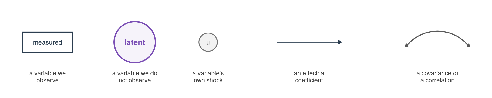
8.1.3 The zeros fix the turn
Section 6.6.5 drew each test as a point in a plane and the two factors as two axes through the origin. The points are fixed by the correlations of the tests, but the axes are a choice: every pair of axes describes the same points, and so the same correlations. A test’s loadings are its coordinates along the two axes, each read off parallel to the other axis.
A zero loading takes this freedom away. Reading has no loading on mathematical ability, so its point must lie on the verbal axis itself. The same holds for vocabulary and grammar, so the verbal axis must pass through the three verbal tests, and the mathematics axis through the three mathematics tests. Only one pair of axes does both. The figure draws the six tests as the confirmatory model estimates them, with the axes through the two groups, 58° apart. (As for promax, the cosine of this angle is the correlation of the two abilities, \(\varphi\).) Drag the slider to turn the axes. The points stay, and every test leaves its axis. The dashed segment from a test, drawn parallel to the other axis, ends on the test’s own axis, and its length is the loading that the model fixes at zero:
f2 <- function(x, d = 2) formatC(x, format = "f", digits = d)
fig_cfa_turn <- function(angs = seq(-45, 45, by = 1), strip = TRUE, fs = 11, lims = c(-0.4, 1.25)) {
bv <- pi / 4 - cfa_turn_angle / 2; bm <- pi / 4 + cfa_turn_angle / 2 # axes as estimated, symmetric about 45°
verbal <- tests_group == "verbal"
P <- cbind(tests_lam * ifelse(verbal, cos(bv), cos(bm)), tests_lam * ifelse(verbal, sin(bv), sin(bm)))
cols <- ifelse(verbal, col_verb, col_math)
pos <- c("bottom right", "top left", "bottom right", "middle right", "middle right", "middle right")
frames <- purrr::map(angs, function(a) {
th <- a * pi / 180
v <- c(cos(bv + th), sin(bv + th)); m <- c(cos(bm + th), sin(bm + th))
L <- t(solve(cbind(v, m), t(P))) # loadings on the turned axes
zero <- ifelse(verbal, L[, 2], L[, 1]) # the six loadings that the model fixes at zero
dirn <- rbind(m, v)[ifelse(verbal, 1, 2), ] # each segment runs parallel to the other axis
foot <- P - zero * dirn
ends <- c(-1.4, 1.4)
list(ax = tibble(x = c(ends * v[1], NA, ends * m[1]), y = c(ends * v[2], NA, ends * m[2]), k = a),
axv = tibble(x = c(0, 1.08 * v[1]), y = c(0, 1.08 * v[2]), k = a),
axm = tibble(x = c(0, 1.08 * m[1]), y = c(0, 1.08 * m[2]), k = a),
lab = tibble(x = 1.16 * c(v[1], m[1]), y = 1.16 * c(v[2], m[2]), txt = c("verbal", "math"),
col = c(col_verb, col_math), k = a),
seg = tibble(x = as.vector(rbind(P[, 1], foot[, 1], NA)), y = as.vector(rbind(P[, 2], foot[, 2], NA)), k = a),
txt = tibble(x = 0, y = 0, k = a,
txt = sprintf("Every pair of axes describes the same six points, and so the same correlations.<br>Largest of the six loadings that the model fixes at zero: %s",
f2(max(abs(zero)))))) })
g <- function(nm) bind_rows(purrr::map(frames, nm))
pts <- tibble(x = P[, 1], y = P[, 2], lab = tests_items, col = cols, pos = pos)
jump <- function(lab, a) list(label = lab, method = "animate",
args = list(list(as.character(a)), list(mode = "immediate",
frame = list(duration = 0, redraw = TRUE), transition = list(duration = 0))))
txt_panel <- plot_ly() |>
add_trace(data = g("txt"), x = ~x, y = ~y, frame = ~k, text = ~txt, type = "scatter", mode = "text",
textfont = list(size = 12, color = "#2c3e50"), hoverinfo = "skip", showlegend = FALSE)
main <- plot_ly() |>
add_trace(data = g("ax"), x = ~x, y = ~y, frame = ~k, type = "scatter", mode = "lines",
line = list(color = "#c8c8c8", width = 1), hoverinfo = "skip", showlegend = FALSE) |>
add_trace(data = g("axv"), x = ~x, y = ~y, frame = ~k, type = "scatter", mode = "lines",
line = list(color = col_verb, width = 3), hoverinfo = "skip", showlegend = FALSE) |>
add_trace(data = g("axm"), x = ~x, y = ~y, frame = ~k, type = "scatter", mode = "lines",
line = list(color = col_math, width = 3), hoverinfo = "skip", showlegend = FALSE) |>
add_trace(data = g("lab"), x = ~x, y = ~y, frame = ~k, text = ~txt, type = "scatter", mode = "text",
textfont = list(size = fs + 2, color = ~col), hoverinfo = "skip", showlegend = FALSE) |>
add_trace(data = g("seg"), x = ~x, y = ~y, frame = ~k, type = "scatter", mode = "lines",
line = list(color = "#333333", width = 2, dash = "dash"), hoverinfo = "skip", showlegend = FALSE) |>
add_trace(data = pts, x = ~x, y = ~y, text = ~lab, type = "scatter", mode = "markers+text",
textposition = ~pos, marker = list(color = ~col, size = 9),
textfont = list(size = fs, color = ~col), hoverinfo = "skip", showlegend = FALSE)
plane <- function(anchor) Filter(Negate(is.null), list(title = "", range = lims, zeroline = FALSE,
showticklabels = FALSE, showgrid = FALSE, scaleanchor = anchor))
p <- if (strip) { # the readout above the plane, as in Chapter 6
subplot(txt_panel, main, nrows = 2, heights = c(0.1, 0.9), margin = 0.01, titleX = TRUE, titleY = TRUE) |>
layout(xaxis = list(visible = FALSE, range = c(-1, 1), fixedrange = TRUE),
yaxis = list(visible = FALSE, range = c(-1, 1), fixedrange = TRUE),
xaxis2 = plane(NULL), yaxis2 = plane("x2"), margin = list(t = 50))
} else { # the plane alone, for the slides
main |> layout(xaxis = plane(NULL), yaxis = plane("x"), margin = list(t = 40))
}
p |>
animation_opts(frame = 120, transition = 0, redraw = TRUE) |>
animation_slider(currentvalue = list(prefix = "axes turned by ", suffix = "°")) |>
animation_button(label = "Play") |>
finalize_animation(list(jump("as estimated", 0), jump("turned by 20°", 20)),
start_frame = "0", prefix = "axes turned by ", suffix = "°")
}
# draw the figure
fig_cfa_turn()In symbols: any turn or tilt of the axes replaces the loadings \(\Lambda\) by \(\Lambda T\) for an invertible \(2\times2\) matrix \(T\), and the factors \(\mathbf f_t\) by \(T^{-1}\mathbf f_t\), so that \(\Lambda T\,T^{-1}\mathbf f_t=\Lambda\mathbf f_t\) and \(\Sigma\) does not change. (For the turns of Chapter 6, \(T\) is the rotation matrix \(Q(\theta)\).) The row of reading becomes
\[ (\lambda_1,\ 0)\begin{pmatrix}t_{11}&t_{12}\\ t_{21}&t_{22}\end{pmatrix}=(\lambda_1t_{11},\ \lambda_1t_{12}), \]
and its zero survives only if \(t_{12}=0\). The zeros of the mathematics tests need \(t_{21}=0\) in the same way. A turn has \(t_{12}=-\sin\theta\), which is zero only for \(\theta=0\) or a half turn, and a half turn merely flips the signs of both factors. So the zeros leave no freedom to turn or tilt: they identify the factors without any rotation step. They also fix the names. Factor 1 is verbal ability because the model says that only the verbal tests load on it, not because we looked at the estimates afterwards.
One choice remains. With \(t_{12}=t_{21}=0\), \(T\) can still stretch each factor, which changes its unit. Doubling every
student’s verbal ability and halving \(\lambda_1,\lambda_2,\lambda_3\) leaves \(\Sigma\) unchanged. Chapter 6 fixed
the variance of every factor at one, and a confirmatory model can do the same. Alternatively it fixes the loading of
one observed variable at one, here one test. That variable is the factor’s marker (also called its reference
indicator): it marks the factor’s unit, because one unit more of the factor moves the marker by one of the marker’s own
units. If reading is the marker of verbal ability, verbal ability is measured in points of the reading test. Any
latent variable can get a marker in the same way. Everitt and Hothorn use both choices, the variances in Section 7.3.1
and markers in Section 7.4.1. The two fit equally well; only the units of the estimates differ. lavaan uses the
first variable of each factor as its marker unless it is told std.lv = TRUE, which fixes the variances instead.
8.1.4 Counting restrictions
\(\Sigma\) holds \(6\cdot7/2=21\) numbers. The model has 6 loadings, 6 unique variances and the correlation \(\varphi\), so 13 parameters and
\[ \text{df}=21-13=8 \]
degrees of freedom. The count does not depend on how the six variables split between the two factors: Everitt and Hothorn’s model of ability and aspiration, with four variables on one factor and two on the other, also has 13 parameters and 8 degrees of freedom. The exploratory model with two factors has 4 (Section 6.4). Of the six zeros, one only fixes the turn, which the exploratory count had already set aside, and one pays for the correlation \(\varphi\). The other four are new restrictions on \(\Sigma\), and the test of Section 8.2 checks them along with the four that every two-factor model makes.
A non-negative count is needed for identification, but it is not enough, as the critic who rates at random showed (Section 6.4). A few rules cover most confirmatory models (Bollen 1989):
- Each latent variable needs a unit: a variance fixed at one, or a marker.
- A factor with three variables that measure only it, with uncorrelated unique shocks, is identified.
- Two such variables are enough if the factor is correlated with another factor.
For complicated models there is no simple rule (Everitt and Hothorn, Section 7.2.2), and lavaan warns when it finds
that a model is not identified.
Check your understanding
- In the path diagram of a confirmatory factor model, a missing arrow from a factor to a test means
- the loading is estimated from the data
- the test has no unique shock
- the loading is fixed at one
- the loading is fixed at zero
- Why can the factors of the six tests not be turned in the confirmatory model?
- A turn would make some of the zero loadings nonzero
- The two factors are correlated
- A turn would change the variances of the tests
- The factors already have names
- With six tests, two correlated factors and each test on one factor, the model has
- 4 degrees of freedom
- 13 degrees of freedom
- 8 degrees of freedom
- 21 degrees of freedom
- Fixing the loading of reading at one, instead of the variance of verbal ability,
- changes the fit of the model
- changes only the units in which verbal ability is measured
- removes one degree of freedom
- makes the factors uncorrelated
Answers
1 d. 2 a. 3 c. 4 b.8.2 Fitting a confirmatory factor model
8.2.1 The model in lavaan
lavaan reads a model from a few lines of text. The operator =~ reads “is measured by”:
library(lavaan)
tests_model <- "
verbal =~ reading + vocabulary + grammar
math =~ arithmetic + algebra + geometry"
tests_cfa <- cfa(tests_model, data = as.data.frame(tests_X), # tests_X: the scores of the 200 students
std.lv = TRUE) # each factor has variance one
summary(tests_cfa)
## lavaan 0.6.17 ended normally after 16 iterations
##
## Estimator ML
## Optimization method NLMINB
## Number of model parameters 13
##
## Number of observations 200
##
## Model Test User Model:
##
## Test statistic 3.323
## Degrees of freedom 8
## P-value (Chi-square) 0.913
##
## Parameter Estimates:
##
## Standard errors Standard
## Information Expected
## Information saturated (h1) model Structured
##
## Latent Variables:
## Estimate Std.Err z-value P(>|z|)
## verbal =~
## reading 0.807 0.068 11.825 0.000
## vocabulary 0.652 0.070 9.255 0.000
## grammar 0.568 0.070 8.146 0.000
## math =~
## arithmetic 0.835 0.078 10.649 0.000
## algebra 0.600 0.075 8.054 0.000
## geometry 0.486 0.071 6.844 0.000
##
## Covariances:
## Estimate Std.Err z-value P(>|z|)
## verbal ~~
## math 0.532 0.074 7.178 0.000
##
## Variances:
## Estimate Std.Err z-value P(>|z|)
## .reading 0.249 0.073 3.425 0.001
## .vocabulary 0.525 0.070 7.474 0.000
## .grammar 0.595 0.070 8.460 0.000
## .arithmetic 0.300 0.095 3.162 0.002
## .algebra 0.595 0.077 7.703 0.000
## .geometry 0.630 0.072 8.732 0.000
## verbal 1.000
## math 1.000After the number of parameters and observations comes the test (Section 8.2.3). Under “Latent Variables”
come the loadings, each with a standard error, a z-value (the estimate divided by its standard error) and a p-value
for the hypothesis that it is zero. Under “Covariances” comes the correlation of the two abilities: cfa() lets
factors correlate unless told otherwise. Under “Variances” come the unique variances \(\psi_i\), marked with a dot, and
the variances of the two factors, fixed at one.
8.2.2 The estimates
The loadings are 0.81, 0.65 and 0.57 for the verbal tests and 0.84, 0.60 and 0.49 for the mathematics tests, close to the true 0.8, 0.7 and 0.6. The correlation of the two abilities is 0.53, with a 95% confidence interval from 0.39 to 0.68 (the estimate plus and minus 1.96 standard errors); the truth is 0.5. The same estimates in the path diagram:
path_diagram <- function(nodes, edges, r_lat = 0.45, r_err = 0.2, h = 0.22, size = 3.9) {
N <- split(nodes, nodes$id)
bpt <- function(n, ux, uy) { # where a line from the centre of node n, direction (ux, uy), leaves it
if (n$type == "lat") return(c(n$x + r_lat * ux, n$y + r_lat * uy))
if (n$type == "err") return(c(n$x + r_err * ux, n$y + r_err * uy))
if (n$type == "pt") return(c(n$x, n$y))
t <- min(if (abs(ux) > 1e-9) n$w / abs(ux) else Inf, if (abs(uy) > 1e-9) h / abs(uy) else Inf)
c(n$x + t * ux, n$y + t * uy)
}
rot <- function(u, a) c(cos(a) * u[1] - sin(a) * u[2], sin(a) * u[1] + cos(a) * u[2])
geo <- purrr::pmap_dfr(edges, function(from, to, label, col, kind, curv, lty, lpos) {
a <- N[[from]]; b <- N[[to]]; u <- c(b$x - a$x, b$y - a$y); u <- u / sqrt(sum(u^2))
ang <- -sign(curv) * atan(2 * abs(curv)) # leave each node along the tangent of the curve
d0 <- rot(u, ang); d1 <- rot(-u, -ang)
p0 <- bpt(a, d0[1], d0[2]); p1 <- bpt(b, d1[1], d1[2])
half <- sqrt(sum((p1 - p0)^2)) / 2
m <- p0 + lpos * (p1 - p0) - curv * half * c(-u[2], u[1]) * (1 - (2 * lpos - 1)^2)
tibble(from, to, kind, col, lty, label, curv, x0 = p0[1], y0 = p0[2], x1 = p1[1], y1 = p1[2], lx = m[1], ly = m[2])
})
circ <- function(n, r) purrr::pmap_dfr(n, function(id, x, y, ...)
tibble(id = id, t = seq(0, 2 * pi, length.out = 100), x = x + r * cos(t), y = y + r * sin(t)))
L <- filter(nodes, type == "lat"); O <- filter(nodes, type == "obs"); E <- filter(nodes, type == "err")
straight <- filter(geo, kind == "dir", curv == 0); curved <- filter(geo, kind == "cov" | curv != 0)
p <- ggplot() + geom_blank(data = geo, aes(lx, ly)) + scale_colour_identity() + coord_equal(clip = "off") + theme_void()
if (nrow(L)) p <- p + geom_polygon(data = left_join(circ(L, r_lat), select(L, id, col), by = "id"),
aes(x, y, group = id, colour = col), fill = "#f6f3fa", linewidth = 1) +
geom_text(data = L, aes(x, y, label = label, colour = col), size = size + 0.7, fontface = "bold")
if (nrow(straight)) p <- p + geom_segment(data = straight, aes(x0, y0, xend = x1, yend = y1, colour = col, linetype = lty),
linewidth = 0.85, arrow = arrow(length = unit(0.17, "cm"), type = "closed"))
for (i in seq_len(nrow(curved))) p <- p +
annotate("curve", x = curved$x0[i], y = curved$y0[i], xend = curved$x1[i], yend = curved$y1[i],
curvature = curved$curv[i], colour = curved$col[i], linewidth = 0.8, linetype = curved$lty[i],
arrow = arrow(length = unit(0.16, "cm"), type = "closed", ends = if (curved$kind[i] == "cov") "both" else "last"))
lab <- filter(geo, label != "")
if (nrow(lab)) p <- p + geom_label(data = lab, aes(lx, ly, label = label, colour = col), size = size - 0.1,
label.size = 0, label.padding = unit(0.1, "lines"), fill = "white")
if (nrow(O)) p <- p + geom_rect(data = O, aes(xmin = x - w, xmax = x + w, ymin = y - h, ymax = y + h),
fill = "white", colour = "#2c3e50", linewidth = 0.8) +
geom_text(data = O, aes(x, y, label = label), size = size, colour = "#2c3e50")
if (nrow(E)) p <- p + geom_polygon(data = circ(E, r_err), aes(x, y, group = id), fill = "#f2f2f2", colour = "grey45",
linewidth = 0.7) +
geom_text(data = E, aes(x, y, label = label), size = size - 0.1, colour = "grey25") +
geom_text(data = filter(E, sub != ""), aes(x + sdx, y + sdy, label = sub, colour = subcol), size = size - 0.3)
p + scale_linetype_identity()
}
cov2 <- function(from, to, label = "", curv = -0.3, col = "grey35", lty = "solid")
tibble(from = from, to = to, label = label, col = col, kind = "cov", curv = curv, lty = lty, lpos = 0.5)
eff <- function(from, to, label = "", col = "#2c3e50", lty = "solid", lpos = 0.6, curv = 0)
tibble(from = from, to = to, label = label, col = col, kind = "dir", curv = curv, lty = lty, lpos = lpos)
f2 <- function(x, d = 2) formatC(x, format = "f", digits = d)
eff <- function(from, to, label = "", col = "#2c3e50", lty = "solid", lpos = 0.6, curv = 0)
tibble(from = from, to = to, label = label, col = col, kind = "dir", curv = curv, lty = lty, lpos = lpos)
sub_digit <- function(i) chartr("0123456789", "₀₁₂₃₄₅₆₇₈₉", as.character(i))
err <- function(id, x, y, label, sub = "", sdx = 0, sdy = -0.36)
tibble(id = id, type = "err", x = x, y = y, label = label, col = "grey45", sub = sub, w = NA_real_, sdx = sdx, sdy = sdy,
subcol = ifelse(grepl("\u2212", sub), col_a2, "grey30"))
own_shocks <- function(vars, y = -0.1, sub = "", idx = seq_len(nrow(vars))) {
list(nodes = err(paste0("u_", vars$id), vars$x, y, paste0("u", sub_digit(idx)), sub = sub),
edges = eff(paste0("u_", vars$id), vars$id, col = "grey45"))
}
lat <- function(id, x, y, label = id, col = col_f)
tibble(id = id, type = "lat", x = x, y = y, label = label, col = col, sub = "", w = NA_real_, sdx = 0, sdy = 0)
obs <- function(id, x, y, label = id, w = 0.52)
tibble(id = id, type = "obs", x = x, y = y, label = label, col = "#2c3e50", sub = "", w = w, sdx = 0, sdy = 0)
tests_layout <- function() {
vars <- obs(tests_items, c(1, 2.2, 3.4, 4.9, 6.1, 7.3), 1)
facs <- lat(c("verbal", "math"), c(2.2, 6.1), 2.45, col = c(col_verb, col_math))
list(vars = vars, facs = facs)
}
fig_cfa_est <- function() {
l <- tests_layout(); u <- own_shocks(l$vars, sub = paste0("ψ = ", f2(tests_psi)))
e <- bind_rows(eff("verbal", tests_items[1:3], f2(tests_lam[1:3]), col_verb),
eff("math", tests_items[4:6], f2(tests_lam[4:6]), col_math),
u$edges, cov2("verbal", "math", f2(tests_phi)))
path_diagram(bind_rows(l$facs, l$vars, u$nodes), e)
}
# draw the figure
fig_cfa_est()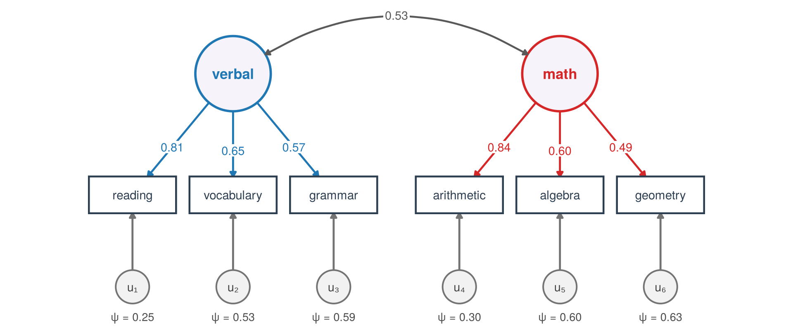
The figure compares the loadings with the truth and with promax from Chapter 6:
f2 <- function(x, d = 2) formatC(x, format = "f", digits = d)
mns <- function(s) sub("^-", "−", s)
f2z <- function(x) mns(f2(ifelse(abs(x) < 0.005, 0, x)))
fig_loadings <- function() {
fp <- unclass(tests_fp$loadings)
if (sum(fp[1:3, 1]) < sum(fp[1:3, 2])) fp <- fp[, 2:1] # verbal first
mk <- function(panel, L, fixed) tibble(panel = panel, test = rep(tests_items, 2), ability = rep(c("verbal", "math"), each = 6),
v = c(L[, 1], L[, 2]), fixed = c(fixed[, 1], fixed[, 2]))
zero <- tests_P == 0
cfa_L <- cbind(c(tests_lam[1:3], 0, 0, 0), c(0, 0, 0, tests_lam[4:6]))
lv <- c("Truth of the simulation", "Exploratory, promax (Chapter 6)", "Confirmatory")
d <- bind_rows(mk(lv[1], tests_P, zero), mk(lv[2], fp, matrix(FALSE, 6, 2)), mk(lv[3], cfa_L, zero)) |>
mutate(panel = factor(panel, levels = lv), test = factor(test, levels = rev(tests_items)),
ability = factor(ability, levels = c("verbal", "math")),
lab = ifelse(fixed & panel == lv[3], "0 fixed", ifelse(fixed, "0", f2z(v))))
ggplot(d, aes(ability, test, fill = abs(v))) + geom_tile(colour = "white", linewidth = 1) +
geom_text(aes(label = lab, colour = fixed), size = 4) +
scale_fill_gradient(low = "#f7fbff", high = "#6baed6", limits = c(0, 1), guide = "none") +
scale_colour_manual(values = c("FALSE" = "#2c3e50", "TRUE" = "grey55"), guide = "none") +
facet_wrap(~ panel) + labs(x = NULL, y = NULL) +
theme(panel.grid = element_blank(), strip.text = element_text(size = 12, face = "bold"),
axis.text = element_text(size = 11.5))
}
# draw the figure
fig_loadings()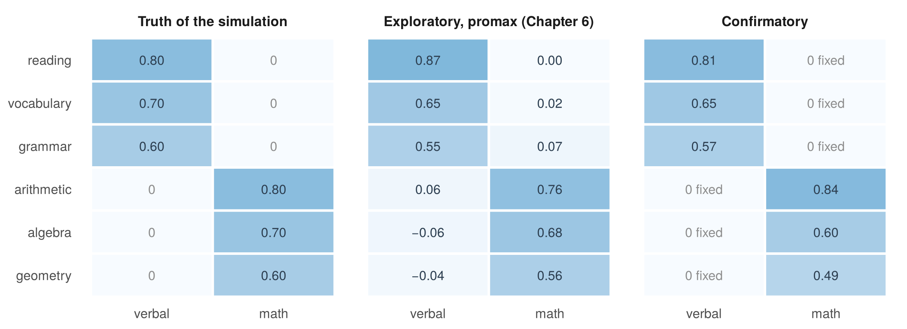
The two analyses agree on the main loadings. They differ in what they report beside them. Promax estimates all twelve loadings and leaves the small cross-loadings to interpretation; the confirmatory model fixes them at zero and tests whether it may. And every confirmatory estimate comes with a standard error and a z-value, which test whether a loading or a correlation could be zero (Everitt and Hothorn, Section 7.3.1).
The correlation of the two abilities, 0.53, is larger than the correlation of the two average scores, the mean of the three verbal tests and the mean of the three mathematics tests, which is 0.38. The averages contain the noise of the tests, and noise that is unrelated in the two averages weakens their correlation. The model estimates the correlation of the abilities themselves, which is why it is sometimes called the disattenuated correlation (Everitt and Hothorn, Section 7.3.1). Section 8.5 shows the same effect for a regression.
8.2.3 Estimation and the test
lavaan estimates by maximum likelihood, exactly as factanal(): it makes the discrepancy
\[ F_{\text{ML}}=\ln|\Sigma|+\operatorname{tr}(S\Sigma^{-1})-\ln|S|-p,\qquad \Sigma=\Lambda\Phi\Lambda'+\Psi, \]
as small as possible (Section 6.5), now with the zeros in \(\Lambda\) fixed. The test statistic is the
minimum of \(F_{\text{ML}}\) times \(n\). (factanal() multiplies by the slightly smaller
\(n-1-(2p+5)/6-2k/3\), so its statistics are a little smaller.) If the model is right, the statistic has approximately a
chi-square distribution with df degrees of freedom. For the six tests it is 3.32 on
8 degrees of freedom, with a p-value of 0.913: the data show no sign against the
zeros.
Check your understanding
- In
lavaan’s model syntax,math =~ arithmetic + algebra + geometrysays that- math is the sum of the three tests
- math is measured by the three tests, each with its own loading and unique shock
- the three tests are uncorrelated
- math is measured without error
- The estimated correlation of the two abilities, 0.53, is larger than the correlation of the two average
scores, 0.38, because
lavaanrounds correlations up- the abilities were standardised
- the noise in the average scores weakens their correlation
- the confirmatory model has more parameters than the exploratory one
- The test of the confirmatory model of the six tests gives a p-value of 0.913. This means
- the zeros are proven to be right
- the model explains 91% of the variance
- the model needs a third factor
- the gap between the model and the data is no larger than sampling noise usually produces
Answers
1 b. 2 c. 3 d.8.3 When the model does not fit
8.3.1 Critics who dine together
Chapter 6 let four critics rate 200 restaurants. When critics 3 and 4 dine together, they share
their bad evenings: their quirks are correlated, and one factor no longer describes the four critics (Section
6.5). lavaan gives the statistic 20.8 on 2 degrees of freedom, with a
p-value below 0.0001. (factanal() reported 20.4, with its smaller multiplier.)
A confirmatory model can say what the story says. Let the quirks of critics 3 and 4 be correlated, with covariance
\(\psi_{34}=\operatorname{Cov}(u_{t3},u_{t4})\). Then \(\Psi\) is no longer diagonal: \(\psi_{34}\) sits off its diagonal.
In lavaan, the operator ~~ adds a covariance:
crit_model <- "
quality =~ critic1 + critic2 + critic3 + critic4
critic3 ~~ critic4"
crit_fit34 <- cfa(crit_model, data = crit_data, std.lv = TRUE) # crit_data: critics 3 and 4 dine together
fitMeasures(crit_fit34, c("chisq", "df", "pvalue"))
## chisq df pvalue
## 0.874 1.000 0.350The model has \(10-9=1\) degree of freedom, and the statistic drops to 0.87, with a p-value of 0.350. The estimated covariance is 0.18 (standard error 0.04), close to the 0.17 of the simulation.
But a different story fits exactly as well. If critics 1 and 2 dined together instead, the statistic would be the same 0.87:
f3 <- function(x) formatC(x, format = "f", digits = 3)
ptxt <- function(p) if (p < 1e-4) "< 0.0001" else if (p < 0.001) paste("=", formatC(p, format = "f", digits = 4)) else paste("=", f3(p))
path_diagram <- function(nodes, edges, r_lat = 0.45, r_err = 0.2, h = 0.22, size = 3.9) {
N <- split(nodes, nodes$id)
bpt <- function(n, ux, uy) { # where a line from the centre of node n, direction (ux, uy), leaves it
if (n$type == "lat") return(c(n$x + r_lat * ux, n$y + r_lat * uy))
if (n$type == "err") return(c(n$x + r_err * ux, n$y + r_err * uy))
if (n$type == "pt") return(c(n$x, n$y))
t <- min(if (abs(ux) > 1e-9) n$w / abs(ux) else Inf, if (abs(uy) > 1e-9) h / abs(uy) else Inf)
c(n$x + t * ux, n$y + t * uy)
}
rot <- function(u, a) c(cos(a) * u[1] - sin(a) * u[2], sin(a) * u[1] + cos(a) * u[2])
geo <- purrr::pmap_dfr(edges, function(from, to, label, col, kind, curv, lty, lpos) {
a <- N[[from]]; b <- N[[to]]; u <- c(b$x - a$x, b$y - a$y); u <- u / sqrt(sum(u^2))
ang <- -sign(curv) * atan(2 * abs(curv)) # leave each node along the tangent of the curve
d0 <- rot(u, ang); d1 <- rot(-u, -ang)
p0 <- bpt(a, d0[1], d0[2]); p1 <- bpt(b, d1[1], d1[2])
half <- sqrt(sum((p1 - p0)^2)) / 2
m <- p0 + lpos * (p1 - p0) - curv * half * c(-u[2], u[1]) * (1 - (2 * lpos - 1)^2)
tibble(from, to, kind, col, lty, label, curv, x0 = p0[1], y0 = p0[2], x1 = p1[1], y1 = p1[2], lx = m[1], ly = m[2])
})
circ <- function(n, r) purrr::pmap_dfr(n, function(id, x, y, ...)
tibble(id = id, t = seq(0, 2 * pi, length.out = 100), x = x + r * cos(t), y = y + r * sin(t)))
L <- filter(nodes, type == "lat"); O <- filter(nodes, type == "obs"); E <- filter(nodes, type == "err")
straight <- filter(geo, kind == "dir", curv == 0); curved <- filter(geo, kind == "cov" | curv != 0)
p <- ggplot() + geom_blank(data = geo, aes(lx, ly)) + scale_colour_identity() + coord_equal(clip = "off") + theme_void()
if (nrow(L)) p <- p + geom_polygon(data = left_join(circ(L, r_lat), select(L, id, col), by = "id"),
aes(x, y, group = id, colour = col), fill = "#f6f3fa", linewidth = 1) +
geom_text(data = L, aes(x, y, label = label, colour = col), size = size + 0.7, fontface = "bold")
if (nrow(straight)) p <- p + geom_segment(data = straight, aes(x0, y0, xend = x1, yend = y1, colour = col, linetype = lty),
linewidth = 0.85, arrow = arrow(length = unit(0.17, "cm"), type = "closed"))
for (i in seq_len(nrow(curved))) p <- p +
annotate("curve", x = curved$x0[i], y = curved$y0[i], xend = curved$x1[i], yend = curved$y1[i],
curvature = curved$curv[i], colour = curved$col[i], linewidth = 0.8, linetype = curved$lty[i],
arrow = arrow(length = unit(0.16, "cm"), type = "closed", ends = if (curved$kind[i] == "cov") "both" else "last"))
lab <- filter(geo, label != "")
if (nrow(lab)) p <- p + geom_label(data = lab, aes(lx, ly, label = label, colour = col), size = size - 0.1,
label.size = 0, label.padding = unit(0.1, "lines"), fill = "white")
if (nrow(O)) p <- p + geom_rect(data = O, aes(xmin = x - w, xmax = x + w, ymin = y - h, ymax = y + h),
fill = "white", colour = "#2c3e50", linewidth = 0.8) +
geom_text(data = O, aes(x, y, label = label), size = size, colour = "#2c3e50")
if (nrow(E)) p <- p + geom_polygon(data = circ(E, r_err), aes(x, y, group = id), fill = "#f2f2f2", colour = "grey45",
linewidth = 0.7) +
geom_text(data = E, aes(x, y, label = label), size = size - 0.1, colour = "grey25") +
geom_text(data = filter(E, sub != ""), aes(x + sdx, y + sdy, label = sub, colour = subcol), size = size - 0.3)
p + scale_linetype_identity()
}
cov2 <- function(from, to, label = "", curv = -0.3, col = "grey35", lty = "solid")
tibble(from = from, to = to, label = label, col = col, kind = "cov", curv = curv, lty = lty, lpos = 0.5)
eff <- function(from, to, label = "", col = "#2c3e50", lty = "solid", lpos = 0.6, curv = 0)
tibble(from = from, to = to, label = label, col = col, kind = "dir", curv = curv, lty = lty, lpos = lpos)
f2 <- function(x, d = 2) formatC(x, format = "f", digits = d)
mns <- function(s) sub("^-", "−", s)
eff <- function(from, to, label = "", col = "#2c3e50", lty = "solid", lpos = 0.6, curv = 0)
tibble(from = from, to = to, label = label, col = col, kind = "dir", curv = curv, lty = lty, lpos = lpos)
sub_digit <- function(i) chartr("0123456789", "₀₁₂₃₄₅₆₇₈₉", as.character(i))
err <- function(id, x, y, label, sub = "", sdx = 0, sdy = -0.36)
tibble(id = id, type = "err", x = x, y = y, label = label, col = "grey45", sub = sub, w = NA_real_, sdx = sdx, sdy = sdy,
subcol = ifelse(grepl("\u2212", sub), col_a2, "grey30"))
own_shocks <- function(vars, y = -0.1, sub = "", idx = seq_len(nrow(vars))) {
list(nodes = err(paste0("u_", vars$id), vars$x, y, paste0("u", sub_digit(idx)), sub = sub),
edges = eff(paste0("u_", vars$id), vars$id, col = "grey45"))
}
lat <- function(id, x, y, label = id, col = col_f)
tibble(id = id, type = "lat", x = x, y = y, label = label, col = col, sub = "", w = NA_real_, sdx = 0, sdy = 0)
obs <- function(id, x, y, label = id, w = 0.52)
tibble(id = id, type = "obs", x = x, y = y, label = label, col = "#2c3e50", sub = "", w = w, sdx = 0, sdy = 0)
fig_crit_shared <- function() {
one <- function(pair, fit, title) {
vars <- obs(paste0("critic", 1:4), c(1, 2.45, 3.9, 5.35), 1, crit_names)
q <- lat("quality", mean(vars$x), 2.45)
pe <- parameterEstimates(fit)
lam <- pe$est[pe$op == "=~"]; psi <- pe$est[pe$op == "~~" & pe$lhs == pe$rhs & pe$lhs != "quality"]
u <- own_shocks(vars, sub = paste0("ψ = ", mns(f2(psi))))
ps <- pe$est[pe$op == "~~" & pe$lhs == paste0("critic", pair[1]) & pe$rhs == paste0("critic", pair[2])]
e <- bind_rows(eff("quality", vars$id, f2(lam), col_f), u$edges,
cov2(paste0("u_critic", pair[1]), paste0("u_critic", pair[2]), f2(ps), curv = 0.55, col = col_a2))
n <- bind_rows(q, vars, u$nodes)
path_diagram(n, e) + labs(title = title, subtitle = sprintf("chi-square %s on %d degree of freedom, p-value %s",
f2(fitMeasures(fit, "chisq")), fitMeasures(fit, "df"),
ptxt(fitMeasures(fit, "pvalue"))))
}
one(c(3, 4), crit_fit34, "The quirks of critics 3 and 4 are shared") +
one(c(1, 2), crit_fit12, "The quirks of critics 1 and 2 are shared") &
theme(plot.title = element_text(face = "bold", size = 13), plot.subtitle = element_text(size = 11))
}
# draw the figure
fig_crit_shared()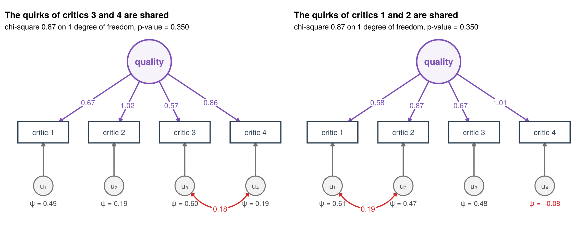
Chapter 6 showed why. When the quirks of one pair are shared, the product \(s_{12}s_{34}\) sticks out among the tetrads, and that product contains a covariance of each pair (Section 6.5). So a covariance between the quirks of either pair can absorb it. The fit cannot tell which pair dines together. Here the second story does need an impossible estimate, a negative unique variance of −0.08 for critic 4 (a Heywood case, Section 6.3.3), so the data lean against it. Without such a sign, only the story decides. Section 8.6 returns to models that fit equally well.
8.3.2 Measuring the misfit
The chi-square test asks whether the misfit is larger than sampling noise. With many observations, even a tiny and unimportant misfit is rejected, and with few observations a large one can go unnoticed (Everitt and Hothorn, Section 7.2.3). Fit indices therefore describe how large the misfit is, rather than whether it is there. Three are reported most often:
- RMSEA, the root mean square error of approximation: the misfit per degree of freedom, after subtracting what sampling noise produces on average, \[\text{RMSEA}=\sqrt{\max\Big(\frac{\chi^2-\text{df}}{\text{df}\cdot n},\,0\Big)},\] where \(\chi^2\) is the test statistic. It is zero when \(\chi^2\) is no larger than its degrees of freedom.
- CFI, the comparative fit index: the share of the misfit of a baseline model, in which all variables are uncorrelated, that the model removes, \[\text{CFI}=1-\frac{\max(\chi^2-\text{df},\,0)}{\max(\chi^2_{\text{B}}-\text{df}_{\text{B}},\ \chi^2-\text{df},\,0)},\] where \(\chi^2_{\text{B}}\) and \(\text{df}_{\text{B}}\) belong to the baseline model.
- SRMR, the standardised root mean square residual: the square root of the average squared residual correlation, the correlation in the sample minus the correlation of the model, over the \(p(p+1)/2\) entries of the correlation matrix.
Common guides call a model good if RMSEA is at most 0.06, CFI at least 0.95 and SRMR at most 0.08 (Hu and Bentler 1999). They are guides, not tests. For the six simulated tests, RMSEA is 0.000, CFI 1.000 and SRMR 0.019.
8.3.3 Nine tests from 1939
Holzinger and Swineford (1939) tested seventh- and eighth-grade students at two schools, Pasteur and Grant-White.
Nine of their tests, for 301 students, are a standard example for confirmatory factor analysis, and they come with
lavaan as HolzingerSwineford1939. Three tests each are meant to measure three abilities:
- visual: visual perception (x1), and two tests that ask the student to turn shapes in the mind, cubes (x2) and lozenges (x3);
- textual: paragraph comprehension (x4), sentence completion (x5) and word meaning (x6);
- speed: speeded addition (x7), speeded counting of dots (x8) and speeded discrimination of straight and curved capital letters (x9).
The confirmatory model puts each test on one ability and lets the three abilities correlate. \(\Sigma\) holds \(9\cdot10/2=45\) numbers, the model has \(9+9+3=21\) parameters, so \(\text{df}=24\). The standardised estimates (the loadings of standardised tests, and the correlations of the abilities):
path_diagram <- function(nodes, edges, r_lat = 0.45, r_err = 0.2, h = 0.22, size = 3.9) {
N <- split(nodes, nodes$id)
bpt <- function(n, ux, uy) { # where a line from the centre of node n, direction (ux, uy), leaves it
if (n$type == "lat") return(c(n$x + r_lat * ux, n$y + r_lat * uy))
if (n$type == "err") return(c(n$x + r_err * ux, n$y + r_err * uy))
if (n$type == "pt") return(c(n$x, n$y))
t <- min(if (abs(ux) > 1e-9) n$w / abs(ux) else Inf, if (abs(uy) > 1e-9) h / abs(uy) else Inf)
c(n$x + t * ux, n$y + t * uy)
}
rot <- function(u, a) c(cos(a) * u[1] - sin(a) * u[2], sin(a) * u[1] + cos(a) * u[2])
geo <- purrr::pmap_dfr(edges, function(from, to, label, col, kind, curv, lty, lpos) {
a <- N[[from]]; b <- N[[to]]; u <- c(b$x - a$x, b$y - a$y); u <- u / sqrt(sum(u^2))
ang <- -sign(curv) * atan(2 * abs(curv)) # leave each node along the tangent of the curve
d0 <- rot(u, ang); d1 <- rot(-u, -ang)
p0 <- bpt(a, d0[1], d0[2]); p1 <- bpt(b, d1[1], d1[2])
half <- sqrt(sum((p1 - p0)^2)) / 2
m <- p0 + lpos * (p1 - p0) - curv * half * c(-u[2], u[1]) * (1 - (2 * lpos - 1)^2)
tibble(from, to, kind, col, lty, label, curv, x0 = p0[1], y0 = p0[2], x1 = p1[1], y1 = p1[2], lx = m[1], ly = m[2])
})
circ <- function(n, r) purrr::pmap_dfr(n, function(id, x, y, ...)
tibble(id = id, t = seq(0, 2 * pi, length.out = 100), x = x + r * cos(t), y = y + r * sin(t)))
L <- filter(nodes, type == "lat"); O <- filter(nodes, type == "obs"); E <- filter(nodes, type == "err")
straight <- filter(geo, kind == "dir", curv == 0); curved <- filter(geo, kind == "cov" | curv != 0)
p <- ggplot() + geom_blank(data = geo, aes(lx, ly)) + scale_colour_identity() + coord_equal(clip = "off") + theme_void()
if (nrow(L)) p <- p + geom_polygon(data = left_join(circ(L, r_lat), select(L, id, col), by = "id"),
aes(x, y, group = id, colour = col), fill = "#f6f3fa", linewidth = 1) +
geom_text(data = L, aes(x, y, label = label, colour = col), size = size + 0.7, fontface = "bold")
if (nrow(straight)) p <- p + geom_segment(data = straight, aes(x0, y0, xend = x1, yend = y1, colour = col, linetype = lty),
linewidth = 0.85, arrow = arrow(length = unit(0.17, "cm"), type = "closed"))
for (i in seq_len(nrow(curved))) p <- p +
annotate("curve", x = curved$x0[i], y = curved$y0[i], xend = curved$x1[i], yend = curved$y1[i],
curvature = curved$curv[i], colour = curved$col[i], linewidth = 0.8, linetype = curved$lty[i],
arrow = arrow(length = unit(0.16, "cm"), type = "closed", ends = if (curved$kind[i] == "cov") "both" else "last"))
lab <- filter(geo, label != "")
if (nrow(lab)) p <- p + geom_label(data = lab, aes(lx, ly, label = label, colour = col), size = size - 0.1,
label.size = 0, label.padding = unit(0.1, "lines"), fill = "white")
if (nrow(O)) p <- p + geom_rect(data = O, aes(xmin = x - w, xmax = x + w, ymin = y - h, ymax = y + h),
fill = "white", colour = "#2c3e50", linewidth = 0.8) +
geom_text(data = O, aes(x, y, label = label), size = size, colour = "#2c3e50")
if (nrow(E)) p <- p + geom_polygon(data = circ(E, r_err), aes(x, y, group = id), fill = "#f2f2f2", colour = "grey45",
linewidth = 0.7) +
geom_text(data = E, aes(x, y, label = label), size = size - 0.1, colour = "grey25") +
geom_text(data = filter(E, sub != ""), aes(x + sdx, y + sdy, label = sub, colour = subcol), size = size - 0.3)
p + scale_linetype_identity()
}
cov2 <- function(from, to, label = "", curv = -0.3, col = "grey35", lty = "solid")
tibble(from = from, to = to, label = label, col = col, kind = "cov", curv = curv, lty = lty, lpos = 0.5)
eff <- function(from, to, label = "", col = "#2c3e50", lty = "solid", lpos = 0.6, curv = 0)
tibble(from = from, to = to, label = label, col = col, kind = "dir", curv = curv, lty = lty, lpos = lpos)
f2 <- function(x, d = 2) formatC(x, format = "f", digits = d)
eff <- function(from, to, label = "", col = "#2c3e50", lty = "solid", lpos = 0.6, curv = 0)
tibble(from = from, to = to, label = label, col = col, kind = "dir", curv = curv, lty = lty, lpos = lpos)
sub_digit <- function(i) chartr("0123456789", "₀₁₂₃₄₅₆₇₈₉", as.character(i))
err <- function(id, x, y, label, sub = "", sdx = 0, sdy = -0.36)
tibble(id = id, type = "err", x = x, y = y, label = label, col = "grey45", sub = sub, w = NA_real_, sdx = sdx, sdy = sdy,
subcol = ifelse(grepl("\u2212", sub), col_a2, "grey30"))
own_shocks <- function(vars, y = -0.1, sub = "", idx = seq_len(nrow(vars))) {
list(nodes = err(paste0("u_", vars$id), vars$x, y, paste0("u", sub_digit(idx)), sub = sub),
edges = eff(paste0("u_", vars$id), vars$id, col = "grey45"))
}
lat <- function(id, x, y, label = id, col = col_f)
tibble(id = id, type = "lat", x = x, y = y, label = label, col = col, sub = "", w = NA_real_, sdx = 0, sdy = 0)
obs <- function(id, x, y, label = id, w = 0.52)
tibble(id = id, type = "obs", x = x, y = y, label = label, col = "#2c3e50", sub = "", w = w, sdx = 0, sdy = 0)
fig_hs_path <- function() {
xs <- c(1, 2.15, 3.3, 4.75, 5.9, 7.05, 8.5, 9.65, 10.8)
vars <- obs(paste0("x", 1:9), xs, 1, hs_tests)
facs <- lat(c("visual", "textual", "speed"), xs[c(2, 5, 8)], 2.6, col = c(col_verb, col_math, col_speed))
st <- standardizedSolution(hs_cfa)
lam <- st$est.std[st$op == "=~"]
u <- own_shocks(vars, sub = paste0("ψ = ", f2(1 - lam^2)))
e <- bind_rows(eff(rep(facs$id, each = 3), vars$id, f2(lam), rep(facs$col, each = 3)), u$edges,
cov2("visual", "textual", f2(hs_phi[1, 2]), curv = -0.2), cov2("textual", "speed", f2(hs_phi[2, 3]), curv = -0.2),
cov2("visual", "speed", f2(hs_phi[1, 3]), curv = -0.3))
path_diagram(bind_rows(facs, vars, u$nodes), e, size = 3.6)
}
# draw the figure
fig_hs_path()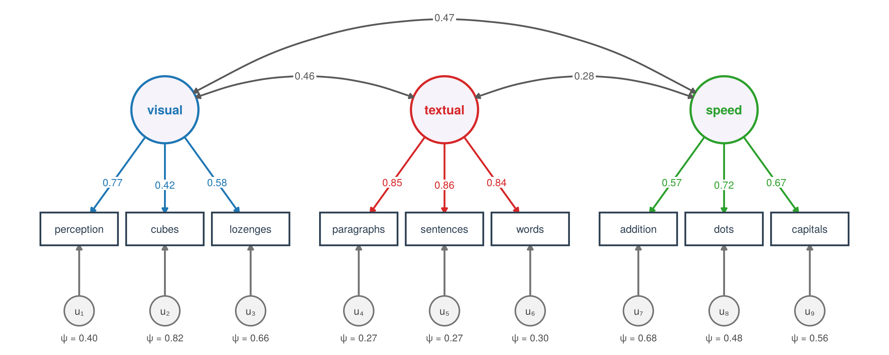
hs_model <- "
visual =~ x1 + x2 + x3
textual =~ x4 + x5 + x6
speed =~ x7 + x8 + x9"
hs_cfa <- cfa(hs_model, data = HolzingerSwineford1939, std.lv = TRUE)
fitMeasures(hs_cfa, c("chisq", "df", "pvalue", "rmsea", "cfi", "srmr"))
## chisq df pvalue rmsea cfi srmr
## 85.306 24.000 0.000 0.092 0.931 0.065This time the test rejects: the statistic is 85.3 on 24 degrees of freedom, with a p-value below 0.0001. The chi-square distribution shows how far out it lies, compared with the six simulated tests, for which the model is true by construction:
f3 <- function(x) formatC(x, format = "f", digits = 3)
ptxt <- function(p) if (p < 1e-4) "< 0.0001" else if (p < 0.001) paste("=", formatC(p, format = "f", digits = 4)) else paste("=", f3(p))
f1 <- function(x) formatC(x, format = "f", digits = 1)
fig_chisq <- function() {
one <- function(stat, df, title) {
x <- seq(0, max(stat * 1.12, qchisq(0.9995, df)), length.out = 500); d <- tibble(x, y = dchisq(x, df))
p <- pchisq(stat, df, lower.tail = FALSE)
ggplot(d, aes(x, y)) + geom_area(data = filter(d, x >= stat), fill = col_a2, alpha = 0.3) + geom_line(linewidth = 0.8) +
geom_vline(xintercept = stat, colour = col_a2, linewidth = 1) +
annotate("label", x = stat, y = max(d$y) * 0.92, label = paste("statistic", f1(stat)), colour = col_a2, size = 3.8,
hjust = ifelse(stat > max(x) * 0.6, 1.05, -0.05), label.size = 0) +
labs(title = title, subtitle = sprintf("chi-square distribution with %d df; p-value %s", df, ptxt(p)),
x = "chi-square statistic", y = "density")
}
(one(tests_fit["chisq"], tests_fit["df"], "Six simulated tests, two abilities") |
one(hs_fit["chisq"], hs_fit["df"], "Nine real tests from 1939, three abilities")) &
theme(plot.title = element_text(face = "bold", size = 13))
}
# draw the figure
fig_chisq()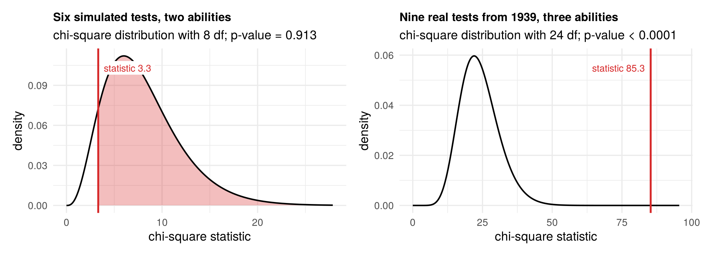
RMSEA is 0.092 (with a 90% confidence interval from 0.071 to 0.114), CFI 0.931 and SRMR 0.065: the misfit is moderate, not dramatic. Where does it sit? The residual correlations show it, next to the tiny ones of the simulated tests:
f1 <- function(x) formatC(x, format = "f", digits = 1)
f2 <- function(x, d = 2) formatC(x, format = "f", digits = d)
mns <- function(s) sub("^-", "−", s)
f2z <- function(x) mns(f2(ifelse(abs(x) < 0.005, 0, x)))
fig_resid <- function() {
one <- function(R, lab, title, sub) {
p <- nrow(R)
d <- expand_grid(i = 1:p, j = 1:p) |> filter(j < i) |> mutate(v = R[cbind(i, j)])
ggplot(d, aes(j, -i, fill = v)) + geom_tile(colour = "white") +
geom_text(aes(label = f2z(v)), size = 3.3) +
scale_fill_gradient2(low = col_a1, mid = "white", high = col_a2, limits = c(-0.2, 0.2), oob = scales::squish,
name = "sample\nminus model") +
scale_x_continuous(breaks = 1:(p - 1), labels = lab[1:(p - 1)], position = "top") +
scale_y_continuous(breaks = -(2:p), labels = lab[2:p]) +
coord_equal() + labs(x = NULL, y = NULL, title = title, subtitle = sub) +
theme(panel.grid = element_blank(), axis.text.x = element_text(angle = 45, hjust = 0), legend.position = "right")
}
one(tests_resid, tests_items, "Six simulated tests, two abilities", sprintf("chi-square %s on %d df", f1(tests_fit["chisq"]), tests_fit["df"])) +
one(hs_resid, hs_tests, "Nine real tests from 1939, three abilities", sprintf("chi-square %s on %d df", f1(hs_fit["chisq"]), hs_fit["df"])) +
plot_layout(guides = "collect", widths = c(1, 1.45)) &
theme(plot.title = element_text(face = "bold", size = 13))
}
# draw the figure
fig_resid()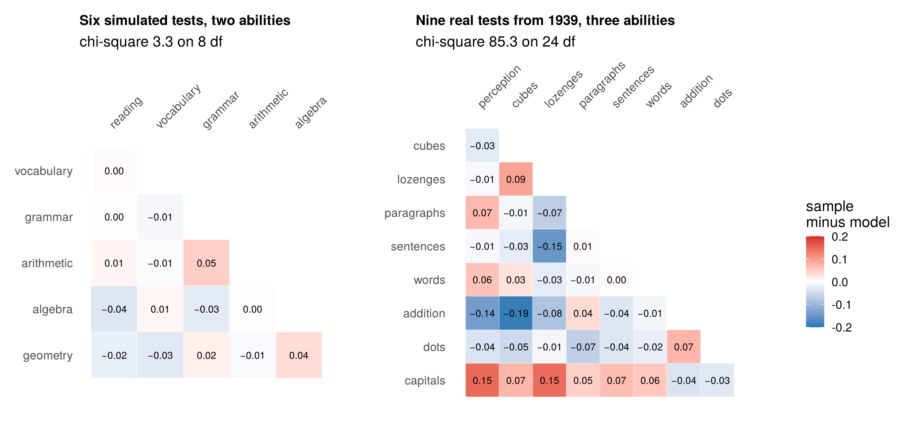
Among the largest gaps, the capitals test correlates more with perception and lozenges than the model allows (0.15 and 0.15), and the addition test less with perception and cubes (−0.14 and −0.19).
8.3.4 Modification indices
For every parameter that the model fixes, a modification index estimates how much the test statistic would drop if
that parameter were freed. lavaan computes them all:
mi <- modindices(hs_cfa, sort. = TRUE)
head(mi[, c("lhs", "op", "rhs", "mi")], 4)
## lhs op rhs mi
## 30 visual =~ x9 36.411
## 76 x7 ~~ x8 34.145
## 28 visual =~ x7 18.631
## 78 x8 ~~ x9 14.946The largest, 36.4, belongs to a loading of capitals on visual ability: telling straight from curved capital letters at speed also takes visual perception. The second, 34.1, is a covariance of the unique shocks of addition and counting dots. With the loading of capitals on visual ability freed, the statistic falls to 52.4 on 23 degrees of freedom, a drop of 32.9, close to the 36.4 that the index predicted. RMSEA falls to 0.065, and CFI rises to 0.967. The fit is better, though the test still rejects.
8.3.5 Confirming or exploring?
The new loading came from the data, not from theory. A model changed this way is no longer confirmed: it has been fitted to the very sample it is tested on, so its p-values are too optimistic. Everitt and Hothorn (Section 7.1) put it plainly: a model suggested by one sample must be tested on a fresh sample, not on the data that suggested it. In Section 7.4.1 they also report Browne’s (1982) criticism of letting unique shocks correlate simply to improve the fit, without a sound theoretical reason. Freeing one parameter after another until the test is satisfied turns a confirmatory analysis back into an exploratory one. So treat a modification index as a suggestion, not a finding: the changed model counts as confirmed only once it also fits new data, such as the scores of a different group of students.
Check your understanding
- For the critics who dine together, freeing the covariance of the quirks of critics 1 and 2 instead of 3 and 4
- fits worse
- fits exactly as well, so the fit cannot tell which pair dines together
- cannot be estimated
- fits better
- The RMSEA of a model is zero when
- the chi-square statistic is no larger than its degrees of freedom
- the model has no degrees of freedom
- every residual correlation is zero
- the p-value is below 0.05
- A modification index estimates
- the standard error of a loading
- the share of variance that a factor explains
- how much the test statistic would drop if a fixed parameter were freed
- the number of factors needed
- After freeing the parameter with the largest modification index, the model
- is confirmed, because it fits better
- must be tested on a new sample before it counts as confirmed
- has more degrees of freedom
- no longer needs fit indices
Answers
1 b. 2 a. 3 c. 4 b.8.4 Simultaneous equations
8.4.1 A fish market
So far, latent variables moved observed ones. Observed variables can also move each other, and the classic example is a market. Picture a fish market. Each day, fishermen and buyers meet at a price (dollars per pound) and a quantity (thousands of pounds), simulated here for 250 days. Two curves decide them:
\[ \begin{aligned} &\text{supply:} &\text{quantity}_t&=-6+4\,\text{price}_t-3\,\text{storm}_t+\delta_1\varepsilon_{t1},\\ &\text{demand:} &\text{price}_t&=9-0.5\,\text{quantity}_t+\delta_2\varepsilon_{t2}. \end{aligned} \]
Fishermen bring four thousand pounds more for each extra dollar, and on stormy days (\(\text{storm}_t=1\), otherwise 0) the catch is three thousand pounds smaller at every price. Buyers pay 50 cents less per pound for each extra thousand pounds on the market. The supply shock \(\varepsilon_{t1}\) (a lucky catch, a broken boat) and the demand shock \(\varepsilon_{t2}\) (a holiday, a restaurant’s big order) are independent and have variance one, and \(\delta_1=1\) and \(\delta_2=0.5\) are their standard deviations, in thousands of pounds and in dollars. Each day the market settles where the two curves cross. So price and quantity are both outcomes, like flight time and fuel in the Introduction, and neither is chosen from outside.
Where do the curves cross? Put the demand equation into the supply equation and solve for the quantity, then put the quantity back into the demand equation:
\[ \begin{aligned} \text{quantity}_t&=10-\text{storm}_t+\tfrac13\,\delta_1\varepsilon_{t1}+\tfrac43\,\delta_2\varepsilon_{t2},\\ \text{price}_t&=4+0.5\,\text{storm}_t-\tfrac16\,\delta_1\varepsilon_{t1}+\tfrac13\,\delta_2\varepsilon_{t2}. \end{aligned} \]
A storm lowers the quantity by one thousand pounds and raises the price by 50 cents. At the old price the catch would fall by three thousand pounds, but the price rises, and the higher price brings two thousand of them back.
For now, hold the weather fixed and look at calm days only (\(\text{storm}_t=0\)), so that only the two shocks move the curves. The storms return in Section 8.4.3. On calm days the average day has the quantity 10 and the price 4, and around it the two shocks move the market as the headwind and load shocks moved the flights. With \(\delta_1=1\) and \(\delta_2=0.5\), one standard deviation of each shock moves the quantity and the price by the columns of
\[ A=\begin{pmatrix}0.33&0.67\\ -0.17&0.17\end{pmatrix}, \]
the first column for the supply shock and the second for the demand shock. A supply shock shifts the supply curve, so the market slides along the demand curve; a demand shock slides it along the supply curve. The figure shows simulated calm days and draws two standard deviations of each shock, from the average day:
mk_curves <- function(storm_curve = TRUE) {
l <- list(geom_abline(intercept = mk_par$d0, slope = mk_par$d1, colour = col_dem, linewidth = 1.1),
geom_abline(intercept = -mk_par$s0 / mk_par$s1, slope = 1 / mk_par$s1, colour = col_sup, linewidth = 1.1))
if (storm_curve) l <- c(l, geom_abline(intercept = -(mk_par$s0 + mk_par$storm) / mk_par$s1, slope = 1 / mk_par$s1,
colour = col_sup, linewidth = 0.9, linetype = "22"))
l
}
mk_sim <- function(n = 250, sd_d = mk_par$sd_d, sd_s = mk_par$sd_s, seed = 8, p_storm = 0.3) {
set.seed(seed)
storm <- rbinom(n, 1, p_storm); ed <- rnorm(n); es <- rnorm(n)
# the price at which the two curves cross: p = 9 - 0.5 (-6 + 4p - 3 storm + sd_s es) + sd_d ed
price <- (9 + 3 + 1.5 * storm - 0.5 * sd_s * es + sd_d * ed) / 3
quantity <- -6 + 4 * price - 3 * storm + sd_s * es
tibble(quantity, price, storm, ed, es)
}
fig_market_arrows <- function() {
d <- mk_sim(p_storm = 0); c0 <- c(10, 4)
arr <- tibble(lab = c("supply shock", "demand shock"), x = c0[1], y = c0[2],
xend = c0[1] + 2 * mk_A[1, ], yend = c0[2] + 2 * mk_A[2, ], col = c(col_sup, col_dem))
ggplot(d, aes(quantity, price)) + mk_curves(FALSE) + geom_point(colour = col_pt, size = 1.6) +
geom_segment(data = arr, aes(x, y, xend = xend, yend = yend, colour = col), linewidth = 1.6,
arrow = arrow(length = unit(0.3, "cm"), type = "closed"), inherit.aes = FALSE) +
geom_label(data = arr, aes(xend, yend, label = lab, colour = col), size = 4, label.size = 0, fill = "white",
nudge_x = c(-0.05, 0.25), nudge_y = c(0.09, 0.07), inherit.aes = FALSE) +
annotate("text", x = 7.5, y = 5.0 - 0.06, label = "demand", colour = col_dem, hjust = 0, size = 3.8) +
annotate("text", x = 12.5, y = 4.62 + 0.08, label = "supply", colour = col_sup, hjust = 1, size = 3.8) +
scale_colour_identity() + mk_axes +
labs(subtitle = "a supply shock moves the market along the demand curve,\na demand shock along the supply curve (arrows: two standard deviations)")
}
# draw the figure
fig_market_arrows()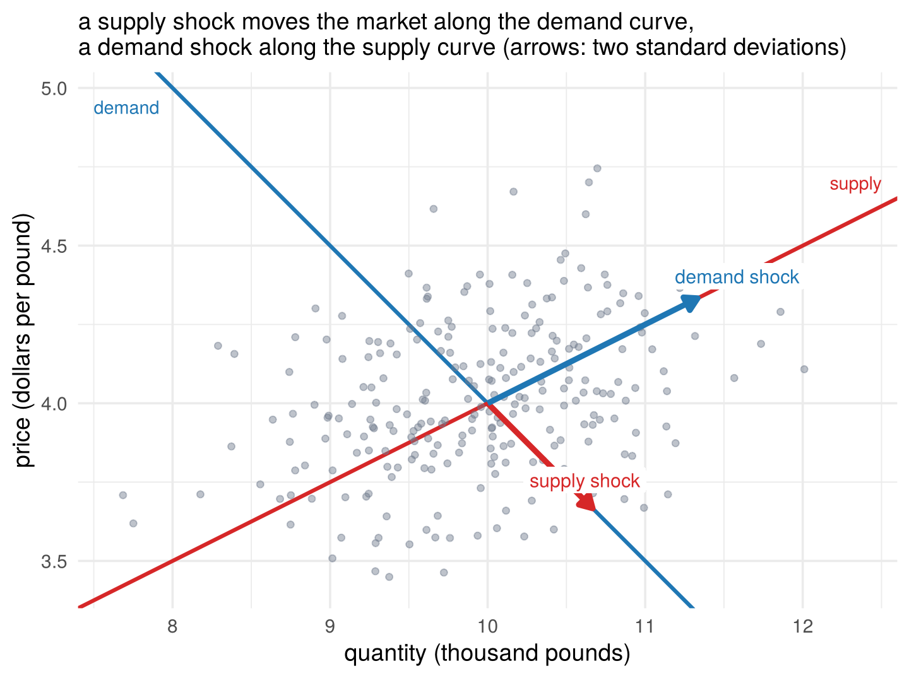
8.4.2 Regression traces neither curve
A regression of price on quantity draws a line through the cloud of days. Which curve is it? Neither, unless one of the curves stays put (Working 1927). The three panels again show calm days only, so the weather plays no part:
f2 <- function(x, d = 2) formatC(x, format = "f", digits = d)
mns <- function(s) sub("^-", "−", s)
mk_sim <- function(n = 250, sd_d = mk_par$sd_d, sd_s = mk_par$sd_s, seed = 8, p_storm = 0.3) {
set.seed(seed)
storm <- rbinom(n, 1, p_storm); ed <- rnorm(n); es <- rnorm(n)
# the price at which the two curves cross: p = 9 - 0.5 (-6 + 4p - 3 storm + sd_s es) + sd_d ed
price <- (9 + 3 + 1.5 * storm - 0.5 * sd_s * es + sd_d * ed) / 3
quantity <- -6 + 4 * price - 3 * storm + sd_s * es
tibble(quantity, price, storm, ed, es)
}
mk_curves <- function(storm_curve = TRUE) {
l <- list(geom_abline(intercept = mk_par$d0, slope = mk_par$d1, colour = col_dem, linewidth = 1.1),
geom_abline(intercept = -mk_par$s0 / mk_par$s1, slope = 1 / mk_par$s1, colour = col_sup, linewidth = 1.1))
if (storm_curve) l <- c(l, geom_abline(intercept = -(mk_par$s0 + mk_par$storm) / mk_par$s1, slope = 1 / mk_par$s1,
colour = col_sup, linewidth = 0.9, linetype = "22"))
l
}
fig_market_working <- function() {
one <- function(d, title, sub, reg = FALSE) {
p <- ggplot(d, aes(quantity, price)) + mk_curves(FALSE) + geom_point(colour = col_pt, size = 1.6) + mk_axes +
annotate("text", x = 7.5, y = 5.0 - 0.06, label = "demand", colour = col_dem, hjust = 0, size = 3.8) +
annotate("text", x = 12.5, y = 4.62 + 0.08, label = "supply", colour = col_sup, hjust = 1, size = 3.8) +
labs(title = title, subtitle = sub)
if (reg) p <- p + geom_smooth(method = "lm", formula = y ~ x, se = FALSE, colour = "grey20", linetype = "42", linewidth = 0.9)
p
}
(one(mk_sim(n = 150, sd_s = 0, p_storm = 0), "Only demand shifts", "the days lie on the supply curve") |
one(mk_sim(n = 150, sd_d = 0, p_storm = 0), "Only supply shifts", "the days lie on the demand curve") |
one(mk_sim(n = 150, p_storm = 0), "Both shift", sprintf("regression of price on quantity (dashed): slope %s",
mns(f2(coef(lm(price ~ quantity, mk_sim(n = 150, p_storm = 0)))[2]))), TRUE)) &
theme(plot.title = element_text(face = "bold", size = 13), plot.subtitle = element_text(size = 10.5))
}
# draw the figure
fig_market_working()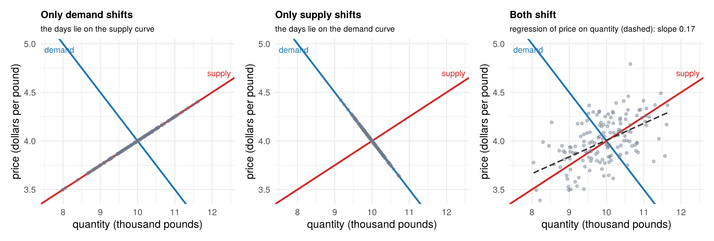
If only demand shifts, the days trace the supply curve. If only supply shifts, they trace the demand curve. If both shift, the cloud lies between the curves, and so does the regression line. Its slope in the right panel is 0.17, neither the \(-0.5\) of the demand curve nor the \(0.25\) of the supply curve (which rises by a quarter of a dollar per thousand pounds, since fishermen bring four thousand pounds more per dollar).
The slider brings the storms back. About three days in ten are stormy, as in the data of Section 8.4.3, and on those days the supply curve lies further to the left. The slider sets how the rest of the variation is split between the two shocks, from supply shocks only (left) to demand shocks only (right). With supply shocks only, every day, calm or stormy, lies on the demand curve, and so does the regression line (dotted). As the share of demand shocks grows, the regression line turns away. With demand shocks only, the calm days lie on the calm supply curve and the stormy days on the stormy one, and the regression line runs between the two curves, along neither. The dashed line, explained next, stays on the demand curve throughout:
f2 <- function(x, d = 2) formatC(x, format = "f", digits = d)
mns <- function(s) sub("^-", "−", s)
mk_sim <- function(n = 250, sd_d = mk_par$sd_d, sd_s = mk_par$sd_s, seed = 8, p_storm = 0.3) {
set.seed(seed)
storm <- rbinom(n, 1, p_storm); ed <- rnorm(n); es <- rnorm(n)
# the price at which the two curves cross: p = 9 - 0.5 (-6 + 4p - 3 storm + sd_s es) + sd_d ed
price <- (9 + 3 + 1.5 * storm - 0.5 * sd_s * es + sd_d * ed) / 3
quantity <- -6 + 4 * price - 3 * storm + sd_s * es
tibble(quantity, price, storm, ed, es)
}
fig_market_slider <- function(shares = seq(0, 1, by = 0.1)) {
xs <- c(7.4, 12.6)
fr <- purrr::map(shares, function(w) {
d <- mk_sim(sd_d = mk_par$sd_d * sqrt(2 * w), sd_s = mk_par$sd_s * sqrt(2 * (1 - w)))
k <- round(100 * w)
reg <- coef(lm(price ~ quantity, d)); iv <- with(d, cov(price, storm) / cov(quantity, storm))
cen <- d |> group_by(storm) |> summarise(quantity = mean(quantity), price = mean(price))
list(pts = d |> mutate(k = k, day = ifelse(storm == 1, "stormy", "calm")),
reg = tibble(x = xs, y = reg[1] + reg[2] * xs, k = k),
ivl = tibble(x = xs, y = cen$price[1] + iv * (xs - cen$quantity[1]), k = k),
cen = cen |> mutate(k = k),
txt = tibble(x = 0, y = 0, k = k,
txt = sprintf("dotted: regression of price on quantity, slope %s<br>dashed: through the centres of calm (grey) and stormy (dark) days, slope %s",
mns(f2(reg[2])), mns(f2(iv))))) })
g <- function(nm) bind_rows(purrr::map(fr, nm))
pts <- g("pts")
line <- function(i, s) tibble(x = xs, y = i + s * xs)
jump <- function(lab, s) list(label = lab, method = "animate",
args = list(list(as.character(s)), list(mode = "immediate", frame = list(duration = 0, redraw = TRUE),
transition = list(duration = 0))))
txt_panel <- plot_ly() |>
add_trace(data = g("txt"), x = ~x, y = ~y, frame = ~k, text = ~txt, type = "scatter", mode = "text",
textfont = list(size = 12, color = "#2c3e50"), hoverinfo = "skip", showlegend = FALSE)
main <- plot_ly() |>
add_trace(data = line(mk_par$d0, mk_par$d1), x = ~x, y = ~y, type = "scatter", mode = "lines",
line = list(color = col_dem, width = 3), hoverinfo = "skip", showlegend = FALSE) |>
add_trace(data = line(-mk_par$s0 / mk_par$s1, 1 / mk_par$s1), x = ~x, y = ~y, type = "scatter", mode = "lines",
line = list(color = col_sup, width = 3), hoverinfo = "skip", showlegend = FALSE) |>
add_trace(data = line(-(mk_par$s0 + mk_par$storm) / mk_par$s1, 1 / mk_par$s1), x = ~x, y = ~y, type = "scatter",
mode = "lines", line = list(color = col_sup, width = 2, dash = "dash"), hoverinfo = "skip", showlegend = FALSE) |>
add_trace(data = filter(pts, day == "calm"), x = ~quantity, y = ~price, frame = ~k, type = "scatter", mode = "markers",
marker = list(color = "#b8c2cc", size = 6), hoverinfo = "skip", showlegend = FALSE) |>
add_trace(data = filter(pts, day == "stormy"), x = ~quantity, y = ~price, frame = ~k, type = "scatter", mode = "markers",
marker = list(color = col_storm, size = 6), hoverinfo = "skip", showlegend = FALSE) |>
add_trace(data = g("reg"), x = ~x, y = ~y, frame = ~k, type = "scatter", mode = "lines",
line = list(color = "#7f8c8d", width = 2.5, dash = "dot"), hoverinfo = "skip", showlegend = FALSE) |>
add_trace(data = g("ivl"), x = ~x, y = ~y, frame = ~k, type = "scatter", mode = "lines",
line = list(color = "black", width = 2, dash = "dash"), hoverinfo = "skip", showlegend = FALSE) |>
add_trace(data = g("cen"), x = ~quantity, y = ~price, frame = ~k, type = "scatter", mode = "markers",
marker = list(symbol = "diamond", size = 13, color = "white", line = list(color = "black", width = 2)),
hoverinfo = "skip", showlegend = FALSE)
lab <- function(x, y, t, col, anchor) list(x = x, y = y, xref = "x2", yref = "y2", text = t, showarrow = FALSE,
xanchor = anchor, font = list(color = col, size = 13))
subplot(txt_panel, main, nrows = 2, heights = c(0.1, 0.9), margin = 0.01, titleX = TRUE, titleY = TRUE) |>
layout(xaxis = list(visible = FALSE, range = c(-1, 1), fixedrange = TRUE),
yaxis = list(visible = FALSE, range = c(-1, 1), fixedrange = TRUE),
xaxis2 = list(title = "quantity (thousand pounds)", range = xs, zeroline = FALSE),
yaxis2 = list(title = "price (dollars per pound)", range = c(3.35, 5.05), zeroline = FALSE),
margin = list(t = 50),
annotations = list(lab(7.48, 4.9, "demand", col_dem, "left"), lab(12.55, 4.72, "supply, calm days", col_sup, "right"),
lab(11.3, 5.0, "supply, stormy days", col_sup, "left"))) |>
animation_opts(frame = 300, transition = 0, redraw = TRUE) |>
animation_slider(currentvalue = list(prefix = "share of the shocks from demand: ", suffix = "%")) |>
animation_button(label = "Play") |>
finalize_animation(list(jump("only supply shocks", 0), jump("half and half", 50), jump("only demand shocks", 100)),
start_frame = "50", prefix = "share of the shocks from demand: ", suffix = "%")
}
# draw the figure
fig_market_slider()This is the regression problem of the Introduction once more. The regression chooses the Cholesky \(A\) (Section 1.4), as if quantity were set from outside and price followed. It describes the cloud, but it is neither the demand curve, which says what buyers pay, nor the supply curve, which says what fishermen bring.
8.4.3 Storms reveal the demand curve
A storm is a supply shock that we can see. It shifts the supply curve and leaves the demand curve where it is, so it moves the market along the demand curve, like any supply shock. The calm days and the stormy days (76 of the 250) therefore centre on two points of the demand curve, and the line through the two centres is the demand curve:
f2 <- function(x, d = 2) formatC(x, format = "f", digits = d)
mns <- function(s) sub("^-", "−", s)
mk_curves <- function(storm_curve = TRUE) {
l <- list(geom_abline(intercept = mk_par$d0, slope = mk_par$d1, colour = col_dem, linewidth = 1.1),
geom_abline(intercept = -mk_par$s0 / mk_par$s1, slope = 1 / mk_par$s1, colour = col_sup, linewidth = 1.1))
if (storm_curve) l <- c(l, geom_abline(intercept = -(mk_par$s0 + mk_par$storm) / mk_par$s1, slope = 1 / mk_par$s1,
colour = col_sup, linewidth = 0.9, linetype = "22"))
l
}
fig_market_storms <- function() {
d <- mk |> mutate(day = factor(ifelse(storm == 1, "stormy day", "calm day"), levels = c("calm day", "stormy day")))
cen <- mk_centre |> mutate(day = factor(ifelse(storm == 1, "stormy day", "calm day"), levels = levels(d$day)))
b <- mk_iv; a <- cen$price[1] - b * cen$quantity[1]
ggplot(d, aes(quantity, price)) + mk_curves() +
geom_point(aes(colour = day), size = 1.6, alpha = 0.75) +
geom_abline(intercept = a, slope = b, colour = col_storm, linewidth = 0.9, linetype = "42") +
geom_point(data = cen, aes(fill = day), shape = 23, size = 5, colour = "black", stroke = 0.9) +
scale_colour_manual(values = c("calm day" = "#b8c2cc", "stormy day" = col_storm), name = NULL) +
scale_fill_manual(values = c("calm day" = "#b8c2cc", "stormy day" = col_storm), guide = "none") +
annotate("text", x = 7.6, y = 5.0 - 0.04, label = "demand", colour = col_dem, hjust = 0, size = 3.9) +
annotate("text", x = 12.45, y = 4.62 + 0.09, label = "supply,\ncalm days", colour = col_sup, hjust = 1, size = 3.7, lineheight = 0.9) +
annotate("text", x = 11.3, y = 5.0, label = "supply,\nstormy days", colour = col_sup, hjust = 0, vjust = 1, size = 3.7,
lineheight = 0.9) +
mk_axes + labs(subtitle = sprintf("dashed: through the two centres (diamonds), slope %s; the demand curve, %s",
mns(f2(mk_iv)), mns(f2(mk_par$d1)))) +
theme(legend.position = "top", legend.justification = "left")
}
# draw the figure
fig_market_storms()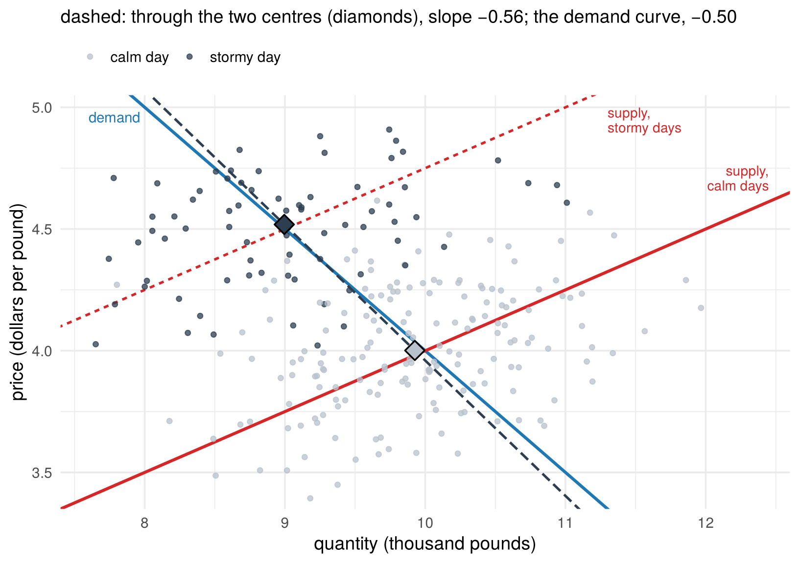
The two centres, as (quantity, price), are (9.93, 4.00) for calm and (9.00, 4.52) for stormy days, close to the (10, 4) and (9, 4.5) of the simulation. So the slope is
\[ \frac{4.52-4.00}{9.00-9.93}=-0.56, \]
close to the true \(-0.5\). Written with covariances, the same slope is \(\operatorname{Cov}(\text{price}_t,\text{storm}_t)/\operatorname{Cov}(\text{quantity}_t,\text{storm}_t)\), the instrumental variable estimate, and the storm is the instrument. It works only because buyers do not care about the weather at sea: the storm stays out of the demand equation. That zero is the restriction from theory. It plays the part of the aircraft manual for the flights: it fixes the direction of one arrow of \(A\), the supply-shock arrow, which must point along the line through the two centres. Once one arrow is fixed, the other follows, as in Section 1.4. Chapter 6 met an instrument before: the third critic. A regression of critic 2’s rating on critic 1’s came out too flat, while the ratio \(\sigma_{23}/\sigma_{13}\) of their covariances with the third critic gave the right slope (Section 6.3), a ratio of the same form as the one for the storms.
8.4.4 The system in matrix form
Number the variables \(x_{t1}=\text{quantity}_t\), \(x_{t2}=\text{price}_t\) and \(x_{t3}=\text{storm}_t\), measure each from its average, which drops the constants, and write each equation for the variable it explains:
\[ \begin{aligned} x_{t1}&=\beta_{12}\,x_{t2}+\beta_{13}\,x_{t3}+\delta_1\varepsilon_{t1} &&\text{(supply)}\\ x_{t2}&=\beta_{21}\,x_{t1}+0\cdot x_{t3}+\delta_2\varepsilon_{t2} &&\text{(demand)}\\ x_{t3}&=\delta_3\varepsilon_{t3} &&\text{(storms come from outside)} \end{aligned} \]
Here \(\beta_{ij}\) (beta) is the effect of variable \(j\) on variable \(i\): \(\beta_{12}=4\), \(\beta_{13}=-3\) and \(\beta_{21}=-0.5\). The storm gets a shock of its own, \(\varepsilon_{t3}\), with the standard deviation \(\delta_3\) of the storm variable. In matrix form,
\[ \mathbf x_t=B\,\mathbf x_t+\Delta\boldsymbol\varepsilon_t,\qquad B=\begin{pmatrix}0&\beta_{12}&\beta_{13}\\ \beta_{21}&0&0\\ 0&0&0\end{pmatrix},\qquad \Delta=\operatorname{diag}(\delta_1,\delta_2,\delta_3). \]
The matrix \(B\) (capital beta) says who affects whom, and its zeros are the restrictions: the diagonal (no variable explains itself), the zero in the demand row (storms stay out of demand), and the row of zeros for the storms. Moving \(B\mathbf x_t\) to the left gives \((I-B)\,\mathbf x_t=\Delta\boldsymbol\varepsilon_t\), so
\[ \mathbf x_t=(I-B)^{-1}\Delta\,\boldsymbol\varepsilon_t,\qquad\text{that is}\qquad A=(I-B)^{-1}\Delta . \]
This is the split \(A=C\Delta\) of Section 4.1, with \(C=(I-B)^{-1}\): column \(l\) of \(C\) says how the variables respond to one unit of \(\delta_l\varepsilon_{tl}\), once all the feedback between price and quantity has played out. In R:
v <- c("quantity", "price", "storm")
B <- matrix(c( 0, 4, -3, # supply: quantity responds to price and storms
-0.5, 0, 0, # demand: price responds to quantity
0, 0, 0), # storms come from outside
nrow = 3, byrow = TRUE, dimnames = list(v, v))
C <- solve(diag(3) - B) # C = (I - B)^(-1)
dimnames(C) <- list(v, c("supply shock", "demand shock", "storm"))
round(C, 2)
## supply shock demand shock storm
## quantity 0.33 1.33 -1.0
## price -0.17 0.33 0.5
## storm 0.00 0.00 1.0The first two columns are the fractions found above by substitution, and the third column holds the effects of a storm once the market has settled: one thousand pounds less and 50 cents more.
The regression of the Introduction is the simplest case of \(B\). Education affects earnings with slope \(\beta\), and nothing affects education, so \(B\) has the single entry \(\beta_{21}=\beta\), and
\[ I-B=\begin{pmatrix}1&0\\ -\beta&1\end{pmatrix},\qquad (I-B)^{-1}=\begin{pmatrix}1&0\\ \beta&1\end{pmatrix}. \]
The inverse only flips the sign of \(\beta\), as multiplying the two matrices confirms:
\[ \begin{pmatrix}1&0\\ -\beta&1\end{pmatrix}\begin{pmatrix}1&0\\ \beta&1\end{pmatrix} =\begin{pmatrix}1&0\\ -\beta+\beta&1\end{pmatrix}=I . \]
Without feedback there is nothing to play out: one unit of education’s own shock raises education by one and earnings by \(\beta\), the first column, and one unit of earnings’ own shock raises only earnings, the second column. So \(C=(I-B)^{-1}\) is the \(C\) of the regression in Section 4.1, and \(A=C\Delta\) is its Cholesky form. In the market, the loop between price and quantity makes the inverse less simple.
As a path diagram, the system has a loop between quantity and price:
path_diagram <- function(nodes, edges, r_lat = 0.45, r_err = 0.2, h = 0.22, size = 3.9) {
N <- split(nodes, nodes$id)
bpt <- function(n, ux, uy) { # where a line from the centre of node n, direction (ux, uy), leaves it
if (n$type == "lat") return(c(n$x + r_lat * ux, n$y + r_lat * uy))
if (n$type == "err") return(c(n$x + r_err * ux, n$y + r_err * uy))
if (n$type == "pt") return(c(n$x, n$y))
t <- min(if (abs(ux) > 1e-9) n$w / abs(ux) else Inf, if (abs(uy) > 1e-9) h / abs(uy) else Inf)
c(n$x + t * ux, n$y + t * uy)
}
rot <- function(u, a) c(cos(a) * u[1] - sin(a) * u[2], sin(a) * u[1] + cos(a) * u[2])
geo <- purrr::pmap_dfr(edges, function(from, to, label, col, kind, curv, lty, lpos) {
a <- N[[from]]; b <- N[[to]]; u <- c(b$x - a$x, b$y - a$y); u <- u / sqrt(sum(u^2))
ang <- -sign(curv) * atan(2 * abs(curv)) # leave each node along the tangent of the curve
d0 <- rot(u, ang); d1 <- rot(-u, -ang)
p0 <- bpt(a, d0[1], d0[2]); p1 <- bpt(b, d1[1], d1[2])
half <- sqrt(sum((p1 - p0)^2)) / 2
m <- p0 + lpos * (p1 - p0) - curv * half * c(-u[2], u[1]) * (1 - (2 * lpos - 1)^2)
tibble(from, to, kind, col, lty, label, curv, x0 = p0[1], y0 = p0[2], x1 = p1[1], y1 = p1[2], lx = m[1], ly = m[2])
})
circ <- function(n, r) purrr::pmap_dfr(n, function(id, x, y, ...)
tibble(id = id, t = seq(0, 2 * pi, length.out = 100), x = x + r * cos(t), y = y + r * sin(t)))
L <- filter(nodes, type == "lat"); O <- filter(nodes, type == "obs"); E <- filter(nodes, type == "err")
straight <- filter(geo, kind == "dir", curv == 0); curved <- filter(geo, kind == "cov" | curv != 0)
p <- ggplot() + geom_blank(data = geo, aes(lx, ly)) + scale_colour_identity() + coord_equal(clip = "off") + theme_void()
if (nrow(L)) p <- p + geom_polygon(data = left_join(circ(L, r_lat), select(L, id, col), by = "id"),
aes(x, y, group = id, colour = col), fill = "#f6f3fa", linewidth = 1) +
geom_text(data = L, aes(x, y, label = label, colour = col), size = size + 0.7, fontface = "bold")
if (nrow(straight)) p <- p + geom_segment(data = straight, aes(x0, y0, xend = x1, yend = y1, colour = col, linetype = lty),
linewidth = 0.85, arrow = arrow(length = unit(0.17, "cm"), type = "closed"))
for (i in seq_len(nrow(curved))) p <- p +
annotate("curve", x = curved$x0[i], y = curved$y0[i], xend = curved$x1[i], yend = curved$y1[i],
curvature = curved$curv[i], colour = curved$col[i], linewidth = 0.8, linetype = curved$lty[i],
arrow = arrow(length = unit(0.16, "cm"), type = "closed", ends = if (curved$kind[i] == "cov") "both" else "last"))
lab <- filter(geo, label != "")
if (nrow(lab)) p <- p + geom_label(data = lab, aes(lx, ly, label = label, colour = col), size = size - 0.1,
label.size = 0, label.padding = unit(0.1, "lines"), fill = "white")
if (nrow(O)) p <- p + geom_rect(data = O, aes(xmin = x - w, xmax = x + w, ymin = y - h, ymax = y + h),
fill = "white", colour = "#2c3e50", linewidth = 0.8) +
geom_text(data = O, aes(x, y, label = label), size = size, colour = "#2c3e50")
if (nrow(E)) p <- p + geom_polygon(data = circ(E, r_err), aes(x, y, group = id), fill = "#f2f2f2", colour = "grey45",
linewidth = 0.7) +
geom_text(data = E, aes(x, y, label = label), size = size - 0.1, colour = "grey25") +
geom_text(data = filter(E, sub != ""), aes(x + sdx, y + sdy, label = sub, colour = subcol), size = size - 0.3)
p + scale_linetype_identity()
}
mns <- function(s) sub("^-", "−", s)
eff <- function(from, to, label = "", col = "#2c3e50", lty = "solid", lpos = 0.6, curv = 0)
tibble(from = from, to = to, label = label, col = col, kind = "dir", curv = curv, lty = lty, lpos = lpos)
err <- function(id, x, y, label, sub = "", sdx = 0, sdy = -0.36)
tibble(id = id, type = "err", x = x, y = y, label = label, col = "grey45", sub = sub, w = NA_real_, sdx = sdx, sdy = sdy,
subcol = ifelse(grepl("\u2212", sub), col_a2, "grey30"))
obs <- function(id, x, y, label = id, w = 0.52)
tibble(id = id, type = "obs", x = x, y = y, label = label, col = "#2c3e50", sub = "", w = w, sdx = 0, sdy = 0)
fig_market_path <- function() {
n <- bind_rows(obs("storm", 0.2, 1, "storm", w = 0.5), obs("quantity", 2.9, 1, "quantity", w = 0.62),
obs("price", 5.7, 1, "price", w = 0.5),
err("e1", 2.9, -0.15, "ε₁", sub = "supply shock"), err("e2", 5.7, -0.15, "ε₂", sub = "demand shock"))
e <- bind_rows(eff("storm", "quantity", mns("-3"), col_sup, lpos = 0.5),
eff("price", "quantity", "4", col_sup, curv = 0.4, lpos = 0.5),
eff("quantity", "price", mns("-0.5"), col_dem, curv = 0.4, lpos = 0.5),
eff("e1", "quantity", col = "grey45"), eff("e2", "price", col = "grey45"))
path_diagram(n, e) +
annotate("text", x = 4.3, y = 2.05, label = "supply: quantity responds to price and storms", colour = col_sup, size = 3.6) +
annotate("text", x = 4.3, y = -0.05, label = "demand: price responds to quantity", colour = col_dem, size = 3.6)
}
# draw the figure
fig_market_path()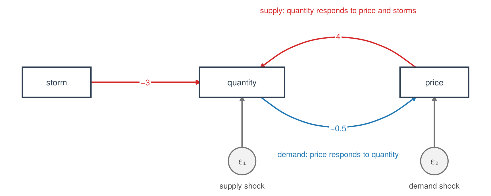
Counting: \(\Sigma\) of the three variables holds 6 numbers, and the model has 6 parameters, the three effects and the
three standard deviations \(\delta_l\). The system is just identified, with nothing left to test, as the three critics of
Chapter 6 were. In lavaan, the operator ~ writes an equation and reads “is explained by”:
mk_model <- "
price ~ quantity # demand
quantity ~ price + storm # supply"
mk_sem <- sem(mk_model, data = mk) # mk: the 250 simulated days
parameterEstimates(mk_sem)[1:3, c("lhs", "op", "rhs", "est", "se")]
## lhs op rhs est se
## 1 price ~ quantity -0.556 0.080
## 2 quantity ~ price 3.803 0.463
## 3 quantity ~ storm -2.900 0.277The demand slope is −0.56, the slope through the two centres. The supply slope, 3.80 (standard error 0.46), and the storm effect, −2.90, are close to the true 4 and \(-3\). The supply curve needs one more restriction, and here it is the independence of the two shocks, as everywhere in these notes. Without it, the supply curve would need its own instrument, something that shifts demand but not supply.
Check your understanding
- On days when only supply shifts, the points of price and quantity lie on
- the supply curve
- the regression line
- the demand curve
- no curve at all
- Storms identify the demand curve because they
- shift the supply curve and leave the demand curve in place
- shift both curves
- are rare
- make price and quantity uncorrelated
- In \(\mathbf x_t=B\mathbf x_t+\Delta\boldsymbol\varepsilon_t\), the entry \(\beta_{21}\) is
- the covariance of the two shocks
- the effect of the first variable on the second
- the effect of the second variable on the first
- the standard deviation of the second shock
- For a system of simultaneous equations, the matrix \(A\) of \(\mathbf x_t=A\boldsymbol\varepsilon_t\) is
- \(B\)
- \(I-B\)
- \(\Delta\)
- \((I-B)^{-1}\Delta\)
Answers
1 c. 2 a. 3 b. 4 d.8.5 Structural equation models
8.5.1 Measurement and structure
A structural equation model combines the two ideas. A measurement model, as in confirmatory factor analysis, says how the observed variables measure the latent ones,
\[ \mathbf x_t=\Lambda\mathbf f_t+\mathbf u_t , \]
and a structural model, as in a system of simultaneous equations, says how the latent variables affect each other,
\[ \mathbf f_t=B\,\mathbf f_t+\Delta\boldsymbol\varepsilon_t . \]
As for the market, \(B\) holds the effects of the latent variables on each other, and \(\Delta\) the standard deviations of their own shocks \(\boldsymbol\varepsilon_t\). The own shocks are uncorrelated, unless the model lets two of them correlate without saying which affects which, as for the two abilities; their correlation matrix is then \(\Phi\). Confirmatory factor analysis is the special case \(B=0\), in which the latent variables only correlate. Simultaneous equations are the case in which every latent variable is measured exactly by one observed variable, \(\Lambda=I\) and \(\Psi=0\). The path diagram shows both parts, the arrows from the circles to the boxes (measurement) and the arrows between the circles (structure).
8.5.2 Why not regress on the test scores?
A year after the six tests, the 200 students take a first-year statistics course. In the simulation, the grade (points out of 100) depends on mathematical ability only:
\[ \text{grade}_t=70+\beta f_{t2}+\delta\,\varepsilon_t ,\qquad \beta=6,\quad \delta=8 . \]
Here \(f_{t2}\) is the mathematical ability of student \(t\), as in the six tests, so one standard deviation of mathematical ability is worth \(\beta=6\) points. The obvious analysis regresses the grade on the average of the three mathematics tests. Dividing the average by the average loading, 0.7, puts it on the scale of the ability (as in step 1 of the factor scores, Section 6.7). The regression slope is then 4.77, well below 6:
f1 <- function(x) formatC(x, format = "f", digits = 1)
fig_atten <- function() {
d <- tibble(math = tests_sim$F[, "math"], avg = gr_avg, grade = gr$grade)
m <- mean(d$grade)
one <- function(x, lab, title, sub, ref) {
ggplot(d, aes(.data[[x]], grade)) + geom_point(colour = col_pt, size = 1.6) +
geom_smooth(method = "lm", formula = y ~ x, se = FALSE, colour = "grey20", linewidth = 1) +
geom_abline(intercept = m - ref * mean(d[[x]]), slope = ref, colour = col_math, linewidth = 1, linetype = "42") +
coord_cartesian(xlim = c(-3.4, 3.4), ylim = c(42, 98)) + labs(x = lab, y = "statistics grade", title = title, subtitle = sub)
}
(one("math", "mathematical ability (standard deviations)", "The ability itself",
sprintf("regression slope %s points per standard deviation", f1(gr_ols_true)), gr_beta) |
one("avg", "average math score, in units of the ability", "The average of the three math tests",
sprintf("regression slope %s: flatter, as the score is noisy", f1(gr_ols)), gr_beta)) +
plot_annotation(subtitle = sprintf("solid: least squares line · red dashed: the structural equation model's slope, %s", f1(gr_beta))) &
theme(plot.title = element_text(face = "bold", size = 13))
}
# draw the figure
fig_atten()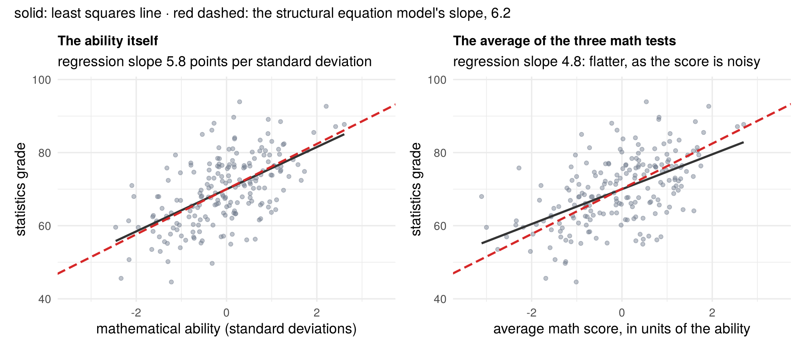
The average is the ability plus noise. On the scale of the ability, the noise has variance 0.34 (the unique variances of the three tests, averaged and rescaled). A regression slope is a covariance over a variance, and the noise adds to the variance of the average but not to its covariance with the grade, because the noise has nothing to do with the grade:
\[ \frac{\operatorname{Cov}(\text{grade}_t,\ f_{t2}+e_t)}{\operatorname{Var}(f_{t2}+e_t)}=\frac{\beta}{1+0.34}=6\times0.745=4.47, \]
where \(e_t\) is the noise. In this sample the slope is 4.77. The factor 0.745 is the share of the average’s variance that comes from the ability, its communality, or in the language of testing its reliability. Students with high scores are partly able and partly lucky, and the luck does not carry over to the grade. This flattening is called regression dilution or attenuation (Spearman 1904), and it hits every regression on a variable measured with noise. Chapter 6 met it as the errors-in-variables problem, when it regressed one critic’s rating on another’s (Section 6.3). Factor scores do not remove it in general: Bartlett’s scores (Section 6.7) are the ability plus an error, like the average, and flatten the slope in the same way. A structural equation model avoids scores altogether.
8.5.3 The structural equation model
The model measures mathematical ability by the three tests and lets it affect the grade:
gr_model <- "
math =~ arithmetic + algebra + geometry # measurement
grade ~ math # structure"
gr_sem <- sem(gr_model, data = gr, std.lv = TRUE) # gr: the six test scores and the grade
parameterEstimates(gr_sem)[4, c("lhs", "op", "rhs", "est", "se")]
## lhs op rhs est se
## 4 grade ~ math 6.186 0.682The effect is 6.19 points per standard deviation (standard error 0.68), close to the true 6:
path_diagram <- function(nodes, edges, r_lat = 0.45, r_err = 0.2, h = 0.22, size = 3.9) {
N <- split(nodes, nodes$id)
bpt <- function(n, ux, uy) { # where a line from the centre of node n, direction (ux, uy), leaves it
if (n$type == "lat") return(c(n$x + r_lat * ux, n$y + r_lat * uy))
if (n$type == "err") return(c(n$x + r_err * ux, n$y + r_err * uy))
if (n$type == "pt") return(c(n$x, n$y))
t <- min(if (abs(ux) > 1e-9) n$w / abs(ux) else Inf, if (abs(uy) > 1e-9) h / abs(uy) else Inf)
c(n$x + t * ux, n$y + t * uy)
}
rot <- function(u, a) c(cos(a) * u[1] - sin(a) * u[2], sin(a) * u[1] + cos(a) * u[2])
geo <- purrr::pmap_dfr(edges, function(from, to, label, col, kind, curv, lty, lpos) {
a <- N[[from]]; b <- N[[to]]; u <- c(b$x - a$x, b$y - a$y); u <- u / sqrt(sum(u^2))
ang <- -sign(curv) * atan(2 * abs(curv)) # leave each node along the tangent of the curve
d0 <- rot(u, ang); d1 <- rot(-u, -ang)
p0 <- bpt(a, d0[1], d0[2]); p1 <- bpt(b, d1[1], d1[2])
half <- sqrt(sum((p1 - p0)^2)) / 2
m <- p0 + lpos * (p1 - p0) - curv * half * c(-u[2], u[1]) * (1 - (2 * lpos - 1)^2)
tibble(from, to, kind, col, lty, label, curv, x0 = p0[1], y0 = p0[2], x1 = p1[1], y1 = p1[2], lx = m[1], ly = m[2])
})
circ <- function(n, r) purrr::pmap_dfr(n, function(id, x, y, ...)
tibble(id = id, t = seq(0, 2 * pi, length.out = 100), x = x + r * cos(t), y = y + r * sin(t)))
L <- filter(nodes, type == "lat"); O <- filter(nodes, type == "obs"); E <- filter(nodes, type == "err")
straight <- filter(geo, kind == "dir", curv == 0); curved <- filter(geo, kind == "cov" | curv != 0)
p <- ggplot() + geom_blank(data = geo, aes(lx, ly)) + scale_colour_identity() + coord_equal(clip = "off") + theme_void()
if (nrow(L)) p <- p + geom_polygon(data = left_join(circ(L, r_lat), select(L, id, col), by = "id"),
aes(x, y, group = id, colour = col), fill = "#f6f3fa", linewidth = 1) +
geom_text(data = L, aes(x, y, label = label, colour = col), size = size + 0.7, fontface = "bold")
if (nrow(straight)) p <- p + geom_segment(data = straight, aes(x0, y0, xend = x1, yend = y1, colour = col, linetype = lty),
linewidth = 0.85, arrow = arrow(length = unit(0.17, "cm"), type = "closed"))
for (i in seq_len(nrow(curved))) p <- p +
annotate("curve", x = curved$x0[i], y = curved$y0[i], xend = curved$x1[i], yend = curved$y1[i],
curvature = curved$curv[i], colour = curved$col[i], linewidth = 0.8, linetype = curved$lty[i],
arrow = arrow(length = unit(0.16, "cm"), type = "closed", ends = if (curved$kind[i] == "cov") "both" else "last"))
lab <- filter(geo, label != "")
if (nrow(lab)) p <- p + geom_label(data = lab, aes(lx, ly, label = label, colour = col), size = size - 0.1,
label.size = 0, label.padding = unit(0.1, "lines"), fill = "white")
if (nrow(O)) p <- p + geom_rect(data = O, aes(xmin = x - w, xmax = x + w, ymin = y - h, ymax = y + h),
fill = "white", colour = "#2c3e50", linewidth = 0.8) +
geom_text(data = O, aes(x, y, label = label), size = size, colour = "#2c3e50")
if (nrow(E)) p <- p + geom_polygon(data = circ(E, r_err), aes(x, y, group = id), fill = "#f2f2f2", colour = "grey45",
linewidth = 0.7) +
geom_text(data = E, aes(x, y, label = label), size = size - 0.1, colour = "grey25") +
geom_text(data = filter(E, sub != ""), aes(x + sdx, y + sdy, label = sub, colour = subcol), size = size - 0.3)
p + scale_linetype_identity()
}
eff <- function(from, to, label = "", col = "#2c3e50", lty = "solid", lpos = 0.6, curv = 0)
tibble(from = from, to = to, label = label, col = col, kind = "dir", curv = curv, lty = lty, lpos = lpos)
err <- function(id, x, y, label, sub = "", sdx = 0, sdy = -0.36)
tibble(id = id, type = "err", x = x, y = y, label = label, col = "grey45", sub = sub, w = NA_real_, sdx = sdx, sdy = sdy,
subcol = ifelse(grepl("\u2212", sub), col_a2, "grey30"))
eff <- function(from, to, label = "", col = "#2c3e50", lty = "solid", lpos = 0.6, curv = 0)
tibble(from = from, to = to, label = label, col = col, kind = "dir", curv = curv, lty = lty, lpos = lpos)
sub_digit <- function(i) chartr("0123456789", "₀₁₂₃₄₅₆₇₈₉", as.character(i))
err <- function(id, x, y, label, sub = "", sdx = 0, sdy = -0.36)
tibble(id = id, type = "err", x = x, y = y, label = label, col = "grey45", sub = sub, w = NA_real_, sdx = sdx, sdy = sdy,
subcol = ifelse(grepl("\u2212", sub), col_a2, "grey30"))
own_shocks <- function(vars, y = -0.1, sub = "", idx = seq_len(nrow(vars))) {
list(nodes = err(paste0("u_", vars$id), vars$x, y, paste0("u", sub_digit(idx)), sub = sub),
edges = eff(paste0("u_", vars$id), vars$id, col = "grey45"))
}
f2 <- function(x, d = 2) formatC(x, format = "f", digits = d)
f0 <- function(x) formatC(x, format = "f", digits = 0, big.mark = ",")
f1 <- function(x) formatC(x, format = "f", digits = 1)
lat <- function(id, x, y, label = id, col = col_f)
tibble(id = id, type = "lat", x = x, y = y, label = label, col = col, sub = "", w = NA_real_, sdx = 0, sdy = 0)
obs <- function(id, x, y, label = id, w = 0.52)
tibble(id = id, type = "obs", x = x, y = y, label = label, col = "#2c3e50", sub = "", w = w, sdx = 0, sdy = 0)
fig_grade_path <- function(truth = FALSE) { # truth = TRUE: the values of the simulation instead of the estimates
vars <- obs(c("arithmetic", "algebra", "geometry"), c(1.6, 2.8, 4.0), 1)
m <- lat("math", 2.8, 2.45, col = col_math)
g <- obs("grade", 5.7, 2.45, "grade", w = 0.48)
if (truth) {
lab_lam <- f1(tests_P[4:6, 2]); psi <- 1 - tests_h2[4:6]; dg <- 8^2; lab_b <- f0(gr_beta_true)
} else {
st <- parameterEstimates(gr_sem)
lab_lam <- f2(st$est[st$op == "=~"]); psi <- st$est[st$op == "~~" & st$lhs %in% vars$id & st$lhs == st$rhs]
dg <- st$est[st$op == "~~" & st$lhs == "grade" & st$rhs == "grade"]; lab_b <- f2(gr_beta)
}
u <- own_shocks(vars, sub = paste0("ψ = ", f2(psi)), idx = 4:6) # tests 4 to 6 of the six tests
eg <- err("e_g", 7.05, 2.45, "ε", sub = paste0("δ² = ", f0(dg)), sdy = -0.36)
e <- bind_rows(eff("math", vars$id, lab_lam, col_math), u$edges, eff("math", "grade", lab_b, "#2c3e50", lpos = 0.5),
eff("e_g", "grade", col = "grey45"))
path_diagram(bind_rows(m, vars, g, u$nodes, eg), e)
}
# draw the figure
fig_grade_path()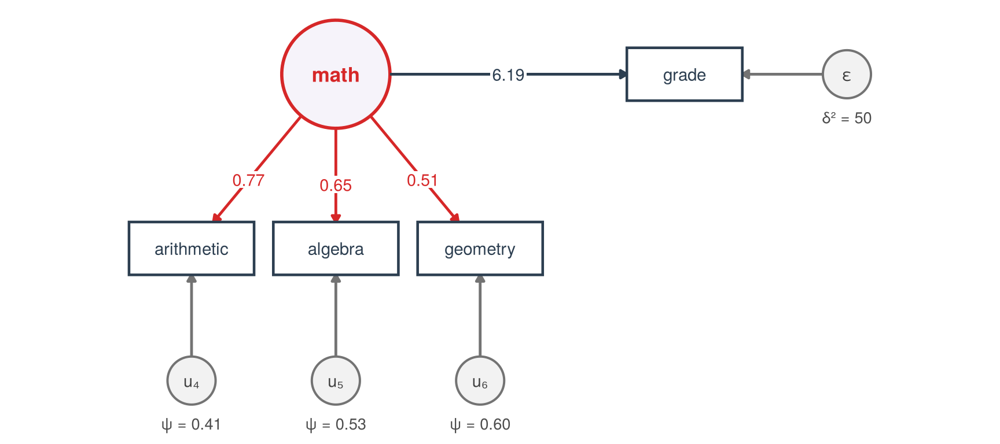
The model never computes a score for any student, so the noise of the scores never enters a slope. It works with the covariances. The covariance of the grade with a test, say arithmetic, is \(\beta\lambda_4\), and the unique shock of arithmetic does not enter it. The loading \(\lambda_4\) comes from the covariances among the three tests, as for the three critics of Chapter 6: \(\lambda_4^2=\sigma_{45}\sigma_{46}/\sigma_{56}\). Dividing the first by the second gives \(\beta\), free of the noise. Counting: the four variables give 10 numbers in \(\Sigma\), the model has 8 parameters (three loadings, three unique variances, \(\beta\) and \(\delta^2\)), so 2 degrees of freedom remain, and the test gives 0.11 with a p-value of 0.948.
8.5.4 Industrialisation and democracy
A classic structural equation model with real data comes from Bollen (1989), and its data come with lavaan as
PoliticalDemocracy. For 75 developing countries, three latent variables are measured:
- industrialisation in 1960 (ind60), by the gross national product per capita (x1), the energy use per capita (x2) and the share of the labour force in industry (x3);
- political democracy in 1960 (dem60), by four expert ratings: the freedom of the press (y1), the freedom of the political opposition (y2), the fairness of elections (y3) and the effectiveness of the elected legislature (y4);
- political democracy in 1965 (dem65), by the same four ratings in 1965 (y5 to y8).
Each indicator measures one latent variable and has its own unique shock, so the measurement equations are
\[ \begin{aligned} \text{x1}_t&=\lambda_1\,\text{ind60}_t+u_{t1} &\qquad \text{y1}_t&=\lambda_4\,\text{dem60}_t+u_{t4} &\qquad \text{y5}_t&=\lambda_8\,\text{dem65}_t+u_{t8}\\ \text{x2}_t&=\lambda_2\,\text{ind60}_t+u_{t2} & \text{y2}_t&=\lambda_5\,\text{dem60}_t+u_{t5} & \text{y6}_t&=\lambda_9\,\text{dem65}_t+u_{t9}\\ \text{x3}_t&=\lambda_3\,\text{ind60}_t+u_{t3} & \text{y3}_t&=\lambda_6\,\text{dem60}_t+u_{t6} & \text{y7}_t&=\lambda_{10}\,\text{dem65}_t+u_{t10}\\ & & \text{y4}_t&=\lambda_7\,\text{dem60}_t+u_{t7} & \text{y8}_t&=\lambda_{11}\,\text{dem65}_t+u_{t11} \end{aligned} \]
for country \(t\), with the loadings \(\lambda\) and the unique shocks \(u\) numbered in the order x1 to x3, y1 to y8. This
is the measurement model \(\mathbf x_t=\Lambda\mathbf f_t+\mathbf u_t\) with
\(\mathbf f_t=(\text{ind60}_t,\text{dem60}_t,\text{dem65}_t)'\): \(\Lambda\) has 11 rows, one for each indicator, and one
non-zero loading in each row. As in Section 8.1, each latent variable needs a unit. sem() fixes the first
loading of each at one, \(\lambda_1=\lambda_4=\lambda_8=1\), so the markers are x1, y1 and y5.
The structural model follows time. Industrialisation in 1960 may affect democracy in 1960, and both may affect democracy in 1965:
\[ \begin{aligned} \text{dem60}_t&=\beta_{21}\,\text{ind60}_t+\delta_2\varepsilon_{t2},\\ \text{dem65}_t&=\beta_{31}\,\text{ind60}_t+\beta_{32}\,\text{dem60}_t+\delta_3\varepsilon_{t3}. \end{aligned} \]
Industrialisation comes from outside the model, like the storms of the market: its equation, \(\text{ind60}_t=\delta_1\varepsilon_{t1}\), holds only its own shock. So \(B\) has entries only below its diagonal: ind60 comes first, dem60 second and dem65 last. Such a model is called recursive, and the order is the assumption, as for the Cholesky choice and the recursive VARs of Section 1.4.
The unique shocks of the ratings get two kinds of covariances (Bollen 1989). A rating made in 1960 and again in 1965 shares its own quirks (y1 with y5, y2 with y6, y3 with y7, and y4 with y8), and in each year two of the ratings come from the same source, whose quirks show up in both (y2 with y4, and y6 with y8). These covariances follow from how the data were collected, before any fit was seen. Everitt and Hothorn’s model for the stability of alienation (Section 7.4.1) has a similar design: an attitude measured in two years, with correlated unique shocks for the same scale.
pd_model <- "
ind60 =~ x1 + x2 + x3 # measurement
dem60 =~ y1 + y2 + y3 + y4
dem65 =~ y5 + y6 + y7 + y8
dem60 ~ a * ind60 # structure
dem65 ~ c * ind60 + b * dem60
indirect := a * b # the effect of ind60 on dem65 through dem60
y1 ~~ y5 # the same rating in 1960 and 1965
y2 ~~ y6
y3 ~~ y7
y4 ~~ y8
y2 ~~ y4 # two ratings from the same source
y6 ~~ y8"
pd_sem <- sem(pd_model, data = PoliticalDemocracy)
fitMeasures(pd_sem, c("chisq", "df", "pvalue", "rmsea", "cfi", "srmr"))
## chisq df pvalue rmsea cfi srmr
## 38.125 35.000 0.329 0.035 0.995 0.044The model fits: 38.1 on 35 degrees of freedom, a p-value of 0.329, RMSEA 0.035, CFI 0.995 and SRMR 0.044. Without the covariances of the ratings it does not: 72.5 on 41 degrees of freedom, with a p-value of 0.002. The standardised estimates:
path_diagram <- function(nodes, edges, r_lat = 0.45, r_err = 0.2, h = 0.22, size = 3.9) {
N <- split(nodes, nodes$id)
bpt <- function(n, ux, uy) { # where a line from the centre of node n, direction (ux, uy), leaves it
if (n$type == "lat") return(c(n$x + r_lat * ux, n$y + r_lat * uy))
if (n$type == "err") return(c(n$x + r_err * ux, n$y + r_err * uy))
if (n$type == "pt") return(c(n$x, n$y))
t <- min(if (abs(ux) > 1e-9) n$w / abs(ux) else Inf, if (abs(uy) > 1e-9) h / abs(uy) else Inf)
c(n$x + t * ux, n$y + t * uy)
}
rot <- function(u, a) c(cos(a) * u[1] - sin(a) * u[2], sin(a) * u[1] + cos(a) * u[2])
geo <- purrr::pmap_dfr(edges, function(from, to, label, col, kind, curv, lty, lpos) {
a <- N[[from]]; b <- N[[to]]; u <- c(b$x - a$x, b$y - a$y); u <- u / sqrt(sum(u^2))
ang <- -sign(curv) * atan(2 * abs(curv)) # leave each node along the tangent of the curve
d0 <- rot(u, ang); d1 <- rot(-u, -ang)
p0 <- bpt(a, d0[1], d0[2]); p1 <- bpt(b, d1[1], d1[2])
half <- sqrt(sum((p1 - p0)^2)) / 2
m <- p0 + lpos * (p1 - p0) - curv * half * c(-u[2], u[1]) * (1 - (2 * lpos - 1)^2)
tibble(from, to, kind, col, lty, label, curv, x0 = p0[1], y0 = p0[2], x1 = p1[1], y1 = p1[2], lx = m[1], ly = m[2])
})
circ <- function(n, r) purrr::pmap_dfr(n, function(id, x, y, ...)
tibble(id = id, t = seq(0, 2 * pi, length.out = 100), x = x + r * cos(t), y = y + r * sin(t)))
L <- filter(nodes, type == "lat"); O <- filter(nodes, type == "obs"); E <- filter(nodes, type == "err")
straight <- filter(geo, kind == "dir", curv == 0); curved <- filter(geo, kind == "cov" | curv != 0)
p <- ggplot() + geom_blank(data = geo, aes(lx, ly)) + scale_colour_identity() + coord_equal(clip = "off") + theme_void()
if (nrow(L)) p <- p + geom_polygon(data = left_join(circ(L, r_lat), select(L, id, col), by = "id"),
aes(x, y, group = id, colour = col), fill = "#f6f3fa", linewidth = 1) +
geom_text(data = L, aes(x, y, label = label, colour = col), size = size + 0.7, fontface = "bold")
if (nrow(straight)) p <- p + geom_segment(data = straight, aes(x0, y0, xend = x1, yend = y1, colour = col, linetype = lty),
linewidth = 0.85, arrow = arrow(length = unit(0.17, "cm"), type = "closed"))
for (i in seq_len(nrow(curved))) p <- p +
annotate("curve", x = curved$x0[i], y = curved$y0[i], xend = curved$x1[i], yend = curved$y1[i],
curvature = curved$curv[i], colour = curved$col[i], linewidth = 0.8, linetype = curved$lty[i],
arrow = arrow(length = unit(0.16, "cm"), type = "closed", ends = if (curved$kind[i] == "cov") "both" else "last"))
lab <- filter(geo, label != "")
if (nrow(lab)) p <- p + geom_label(data = lab, aes(lx, ly, label = label, colour = col), size = size - 0.1,
label.size = 0, label.padding = unit(0.1, "lines"), fill = "white")
if (nrow(O)) p <- p + geom_rect(data = O, aes(xmin = x - w, xmax = x + w, ymin = y - h, ymax = y + h),
fill = "white", colour = "#2c3e50", linewidth = 0.8) +
geom_text(data = O, aes(x, y, label = label), size = size, colour = "#2c3e50")
if (nrow(E)) p <- p + geom_polygon(data = circ(E, r_err), aes(x, y, group = id), fill = "#f2f2f2", colour = "grey45",
linewidth = 0.7) +
geom_text(data = E, aes(x, y, label = label), size = size - 0.1, colour = "grey25") +
geom_text(data = filter(E, sub != ""), aes(x + sdx, y + sdy, label = sub, colour = subcol), size = size - 0.3)
p + scale_linetype_identity()
}
cov2 <- function(from, to, label = "", curv = -0.3, col = "grey35", lty = "solid")
tibble(from = from, to = to, label = label, col = col, kind = "cov", curv = curv, lty = lty, lpos = 0.5)
f2 <- function(x, d = 2) formatC(x, format = "f", digits = d)
eff <- function(from, to, label = "", col = "#2c3e50", lty = "solid", lpos = 0.6, curv = 0)
tibble(from = from, to = to, label = label, col = col, kind = "dir", curv = curv, lty = lty, lpos = lpos)
err <- function(id, x, y, label, sub = "", sdx = 0, sdy = -0.36)
tibble(id = id, type = "err", x = x, y = y, label = label, col = "grey45", sub = sub, w = NA_real_, sdx = sdx, sdy = sdy,
subcol = ifelse(grepl("\u2212", sub), col_a2, "grey30"))
lat <- function(id, x, y, label = id, col = col_f)
tibble(id = id, type = "lat", x = x, y = y, label = label, col = col, sub = "", w = NA_real_, sdx = 0, sdy = 0)
obs <- function(id, x, y, label = id, w = 0.52)
tibble(id = id, type = "obs", x = x, y = y, label = label, col = "#2c3e50", sub = "", w = w, sdx = 0, sdy = 0)
fig_pd_path <- function() {
st <- standardizedSolution(pd_sem)
g <- function(lhs, op, rhs) st$est.std[st$lhs == lhs & st$op == op & st$rhs == rhs]
ytop <- obs(paste0("y", 1:8), c(0.8, 1.9, 3.0, 4.1, 5.9, 7.0, 8.1, 9.2), 3.3, paste0("y", 1:8), w = 0.4)
xbot <- obs(paste0("x", 1:3), c(3.9, 5.0, 6.1), -0.55, paste0("x", 1:3), w = 0.4)
facs <- lat(c("dem60", "dem65", "ind60"), c(2.45, 7.55, 5.0), c(2.0, 2.0, 0.75),
label = c("dem60", "dem65", "ind60"), col = c(col_a1, col_f, "#e67e22"))
ut <- err(paste0("u_", ytop$id), ytop$x, 4.3, "u")
ub <- err(paste0("u_", xbot$id), xbot$x, -1.55, "u")
ud <- err(c("d60", "d65"), c(1.1, 8.9), c(1.35, 1.35), c("ε₂", "ε₃"))
e <- bind_rows(
eff("dem60", ytop$id[1:4], f2(sapply(ytop$id[1:4], function(v) g("dem60", "=~", v))), col_a1, lpos = 0.55),
eff("dem65", ytop$id[5:8], f2(sapply(ytop$id[5:8], function(v) g("dem65", "=~", v))), col_f, lpos = 0.55),
eff("ind60", xbot$id, f2(sapply(xbot$id, function(v) g("ind60", "=~", v))), "#e67e22", lpos = 0.55),
eff(ut$id, ytop$id, col = "grey45"), eff(ub$id, xbot$id, col = "grey45"), eff(ud$id, c("dem60", "dem65"), col = "grey45"),
eff("ind60", "dem60", f2(g("dem60", "~", "ind60")), "#2c3e50", lpos = 0.5),
eff("ind60", "dem65", f2(g("dem65", "~", "ind60")), "#2c3e50", lpos = 0.5),
eff("dem60", "dem65", f2(g("dem65", "~", "dem60")), "#2c3e50", lpos = 0.5),
cov2(paste0("u_y", 1:4), paste0("u_y", 5:8), curv = -c(0.16, 0.2, 0.24, 0.28), col = "grey55"),
cov2(c("u_y2", "u_y6"), c("u_y4", "u_y8"), curv = -0.55, col = "grey55"))
path_diagram(bind_rows(facs, ytop, xbot, ut, ub, ud), e, size = 3.6)
}
# draw the figure
fig_pd_path()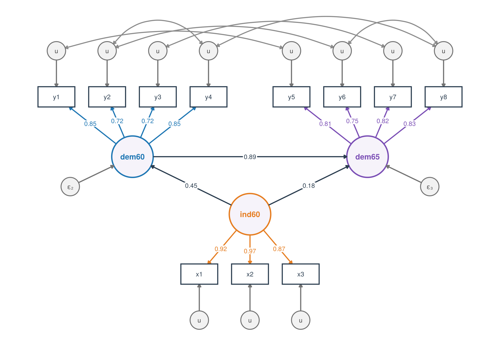
Democracy is persistent: for the same industrialisation, one standard deviation more democracy in 1960 means
0.89 standard deviations more in 1965. Industrialisation affects democracy in 1965 in two ways. Its direct effect is the arrow from ind60 to
dem65, 0.18. Its indirect effect runs through dem60, the product of the two arrows on that path,
\(0.45\times0.89=0.40\). The total effect is the sum,
0.58. So industrialisation in 1960 mattered for democracy in 1965 mostly through the democracy it already
went with in 1960. In the model syntax, a * gives an arrow a name, and := defines a new quantity from named ones.
So indirect := a * b asks lavaan for the indirect effect with a standard error. In the units of the markers x1, y1
and y5, it is 1.24, with a standard error of 0.36.
Check your understanding
- In a structural equation model, the arrows from a latent variable to its observed variables form
- the structural model
- the measurement model
- the baseline model
- the instrument
- Regressing the statistics grade on the average math score gives a slope below the true effect because
- the average adds noise to the variance but not to the covariance with the grade
- the grade is measured with noise
- the sample is small
- the tests are correlated
- A test score has reliability 0.6. A regression of an outcome on this score, scaled to the ability, shrinks the true
slope to about
- 36% of its size
- 100% of its size
- 60% of its size
- 160% of its size
- In the model of industrialisation and democracy, the standardised indirect effect of ind60 on dem65 is
- the arrow from ind60 to dem65
- the sum of all arrows
- the correlation of ind60 and dem65
- the product of the arrows from ind60 to dem60 and from dem60 to dem65
Answers
1 b. 2 a. 3 c. 4 d.8.6 What the arrows mean
8.6.1 Models that fit equally well
Three models for the grade: mathematical ability affects the grade, the grade affects mathematical ability, or the two are simply correlated. All three can produce exactly the same covariance matrices, so they fit any data equally well, these data included:
f2 <- function(x, d = 2) formatC(x, format = "f", digits = d)
path_diagram <- function(nodes, edges, r_lat = 0.45, r_err = 0.2, h = 0.22, size = 3.9) {
N <- split(nodes, nodes$id)
bpt <- function(n, ux, uy) { # where a line from the centre of node n, direction (ux, uy), leaves it
if (n$type == "lat") return(c(n$x + r_lat * ux, n$y + r_lat * uy))
if (n$type == "err") return(c(n$x + r_err * ux, n$y + r_err * uy))
if (n$type == "pt") return(c(n$x, n$y))
t <- min(if (abs(ux) > 1e-9) n$w / abs(ux) else Inf, if (abs(uy) > 1e-9) h / abs(uy) else Inf)
c(n$x + t * ux, n$y + t * uy)
}
rot <- function(u, a) c(cos(a) * u[1] - sin(a) * u[2], sin(a) * u[1] + cos(a) * u[2])
geo <- purrr::pmap_dfr(edges, function(from, to, label, col, kind, curv, lty, lpos) {
a <- N[[from]]; b <- N[[to]]; u <- c(b$x - a$x, b$y - a$y); u <- u / sqrt(sum(u^2))
ang <- -sign(curv) * atan(2 * abs(curv)) # leave each node along the tangent of the curve
d0 <- rot(u, ang); d1 <- rot(-u, -ang)
p0 <- bpt(a, d0[1], d0[2]); p1 <- bpt(b, d1[1], d1[2])
half <- sqrt(sum((p1 - p0)^2)) / 2
m <- p0 + lpos * (p1 - p0) - curv * half * c(-u[2], u[1]) * (1 - (2 * lpos - 1)^2)
tibble(from, to, kind, col, lty, label, curv, x0 = p0[1], y0 = p0[2], x1 = p1[1], y1 = p1[2], lx = m[1], ly = m[2])
})
circ <- function(n, r) purrr::pmap_dfr(n, function(id, x, y, ...)
tibble(id = id, t = seq(0, 2 * pi, length.out = 100), x = x + r * cos(t), y = y + r * sin(t)))
L <- filter(nodes, type == "lat"); O <- filter(nodes, type == "obs"); E <- filter(nodes, type == "err")
straight <- filter(geo, kind == "dir", curv == 0); curved <- filter(geo, kind == "cov" | curv != 0)
p <- ggplot() + geom_blank(data = geo, aes(lx, ly)) + scale_colour_identity() + coord_equal(clip = "off") + theme_void()
if (nrow(L)) p <- p + geom_polygon(data = left_join(circ(L, r_lat), select(L, id, col), by = "id"),
aes(x, y, group = id, colour = col), fill = "#f6f3fa", linewidth = 1) +
geom_text(data = L, aes(x, y, label = label, colour = col), size = size + 0.7, fontface = "bold")
if (nrow(straight)) p <- p + geom_segment(data = straight, aes(x0, y0, xend = x1, yend = y1, colour = col, linetype = lty),
linewidth = 0.85, arrow = arrow(length = unit(0.17, "cm"), type = "closed"))
for (i in seq_len(nrow(curved))) p <- p +
annotate("curve", x = curved$x0[i], y = curved$y0[i], xend = curved$x1[i], yend = curved$y1[i],
curvature = curved$curv[i], colour = curved$col[i], linewidth = 0.8, linetype = curved$lty[i],
arrow = arrow(length = unit(0.16, "cm"), type = "closed", ends = if (curved$kind[i] == "cov") "both" else "last"))
lab <- filter(geo, label != "")
if (nrow(lab)) p <- p + geom_label(data = lab, aes(lx, ly, label = label, colour = col), size = size - 0.1,
label.size = 0, label.padding = unit(0.1, "lines"), fill = "white")
if (nrow(O)) p <- p + geom_rect(data = O, aes(xmin = x - w, xmax = x + w, ymin = y - h, ymax = y + h),
fill = "white", colour = "#2c3e50", linewidth = 0.8) +
geom_text(data = O, aes(x, y, label = label), size = size, colour = "#2c3e50")
if (nrow(E)) p <- p + geom_polygon(data = circ(E, r_err), aes(x, y, group = id), fill = "#f2f2f2", colour = "grey45",
linewidth = 0.7) +
geom_text(data = E, aes(x, y, label = label), size = size - 0.1, colour = "grey25") +
geom_text(data = filter(E, sub != ""), aes(x + sdx, y + sdy, label = sub, colour = subcol), size = size - 0.3)
p + scale_linetype_identity()
}
cov2 <- function(from, to, label = "", curv = -0.3, col = "grey35", lty = "solid")
tibble(from = from, to = to, label = label, col = col, kind = "cov", curv = curv, lty = lty, lpos = 0.5)
eff <- function(from, to, label = "", col = "#2c3e50", lty = "solid", lpos = 0.6, curv = 0)
tibble(from = from, to = to, label = label, col = col, kind = "dir", curv = curv, lty = lty, lpos = lpos)
eff <- function(from, to, label = "", col = "#2c3e50", lty = "solid", lpos = 0.6, curv = 0)
tibble(from = from, to = to, label = label, col = col, kind = "dir", curv = curv, lty = lty, lpos = lpos)
sub_digit <- function(i) chartr("0123456789", "₀₁₂₃₄₅₆₇₈₉", as.character(i))
err <- function(id, x, y, label, sub = "", sdx = 0, sdy = -0.36)
tibble(id = id, type = "err", x = x, y = y, label = label, col = "grey45", sub = sub, w = NA_real_, sdx = sdx, sdy = sdy,
subcol = ifelse(grepl("\u2212", sub), col_a2, "grey30"))
own_shocks <- function(vars, y = -0.1, sub = "", idx = seq_len(nrow(vars))) {
list(nodes = err(paste0("u_", vars$id), vars$x, y, paste0("u", sub_digit(idx)), sub = sub),
edges = eff(paste0("u_", vars$id), vars$id, col = "grey45"))
}
lat <- function(id, x, y, label = id, col = col_f)
tibble(id = id, type = "lat", x = x, y = y, label = label, col = col, sub = "", w = NA_real_, sdx = 0, sdy = 0)
obs <- function(id, x, y, label = id, w = 0.52)
tibble(id = id, type = "obs", x = x, y = y, label = label, col = "#2c3e50", sub = "", w = w, sdx = 0, sdy = 0)
fig_equivalent <- function() {
one <- function(k) {
vars <- obs(c("arithmetic", "algebra", "geometry"), c(1.6, 2.8, 4.0), 1)
m <- lat("math", 2.8, 2.45, col = col_math); g <- obs("grade", 5.5, 2.45, "grade", w = 0.48)
u <- own_shocks(vars, idx = 4:6)
rel <- switch(k, eff("math", "grade", lpos = 0.5), eff("grade", "math", lpos = 0.5), cov2("math", "grade", curv = -0.4))
path_diagram(bind_rows(m, vars, g, u$nodes), bind_rows(eff("math", vars$id, col = col_math), u$edges, rel), size = 3.5) +
labs(title = names(gr_eq)[k], subtitle = sprintf("chi-square %s on %d degrees of freedom", f2(gr_eq_fit[k, "chisq"]),
gr_eq_fit[k, "df"]))
}
(one(1) | one(2) | one(3)) & theme(plot.title = element_text(face = "bold", size = 14, hjust = 0.5),
plot.subtitle = element_text(size = 11, hjust = 0.5))
}
# draw the figure
fig_equivalent()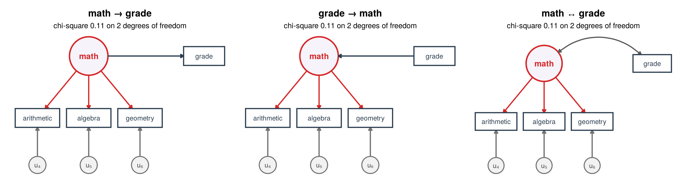
Models like these are called equivalent. The direction of the arrow between two variables cannot come from \(\Sigma\), so it has to come from outside the data, here from time: the tests were taken a year before the course. The critics of Section 8.3 were another case, two pairs who might dine together with the same fit. So was the market without storms, where a whole family of demand and supply curves fits the cloud of days equally well. It is the problem of the whole course: the data fix the reduced form \(\Sigma\), and the structural form, the arrows and the zeros, needs restrictions that the data cannot supply (Section 1.5).
8.6.2 Correlations are still correlations
A model that fits does not prove its arrows. Everitt and Hothorn (Section 7.5) close their chapter with a warning from Cliff (1983): correlational data are still correlational, no program can take account of variables that are not in the analysis, and causal relations need patient attention to all the relevant variables and, as a final confirmation, experiments. A variable left out can create covariances that the model then puts down to its own arrows. If motivation raised both the test scores and the grade, for example, the model of the grade would credit its effect to mathematical ability. A fit says only that the data do not contradict the model.
Two practical points come with the method. Maximum likelihood assumes normal data. Ratings on a scale with a few
categories are not normal, and lavaan offers robust estimates (estimator = "MLR") and methods for ordered
categories (the argument ordered). And the chi-square test relies on large samples. The 75 countries are few for a
model with 31 parameters, so its p-value is approximate.
Check your understanding
- Two structural equation models are equivalent when
- they have the same number of latent variables
- they can produce exactly the same covariance matrices, so they fit any data equally well
- they have the same arrows
- both are rejected by the test
- A model that passes the chi-square test
- shows that the data do not contradict it, but does not prove its arrows
- proves that its arrows are causal
- cannot have an equivalent model
- needs no theory
Answers
1 b. 2 a.8.7 Exploratory, confirmatory, structural
| Exploratory factor analysis | Confirmatory factor analysis | Structural equation model | |
|---|---|---|---|
| Which loadings are zero | none; a rotation picks a simple turn | fixed by theory | fixed by theory |
| The turn of the factors | free, chosen by varimax or promax | fixed by the zeros | fixed by the zeros |
| Latent variables relate by | none (varimax) or correlations (promax) | correlations | effects (arrows) and correlations |
| Unique shocks | uncorrelated | uncorrelated, or correlated where theory says | the same |
| The test | likelihood ratio test of the number of factors | the same test, of all the restrictions, and fit indices | the same |
| In R | factanal() |
cfa() of lavaan |
sem() of lavaan |
8.8 Summary
- Confirmatory factor analysis writes the zeros of the loading matrix down in advance, from theory: each variable loads only on the factors it is meant to measure. The zeros fix the turn of the factors and their names, so no rotation is needed. Each factor still needs a unit, a variance or a marker loading fixed at one.
- The count of restrictions, \(p(p+1)/2\) minus the number of free parameters, gives the degrees of freedom. A non-negative count is needed for identification but not enough.
- Estimation is the maximum likelihood of factor analysis, and the chi-square test checks all restrictions at once. Fit indices, RMSEA, CFI and SRMR, describe how large the misfit is, and residual correlations show where it sits.
- Correlated unique shocks and extra loadings can be freed, but only with a reason from outside the data. Changes suggested by modification indices have to be tested on new data.
- Simultaneous equations let observed variables affect each other: \(\mathbf x_t=B\mathbf x_t+\Delta \boldsymbol\varepsilon_t\), so \(A=(I-B)^{-1}\Delta\). A regression of price on quantity traces neither the demand nor the supply curve. A variable that shifts only one curve, an instrument, identifies the other.
- Structural equation models combine a measurement model, \(\mathbf x_t=\Lambda\mathbf f_t+\mathbf u_t\), with a structural model, \(\mathbf f_t=B\mathbf f_t+\Delta\boldsymbol\varepsilon_t\). They avoid the attenuation of regressions on noisy measures, and they split effects into direct and indirect ones.
- Equivalent models fit equally well with different arrows. The data fix \(\Sigma\); the arrows come from theory, time or experiments.
Confirmatory factor analysis and structural equation models let theory choose the structural form: the zeros and the arrows are written down first, and the data estimate the rest and test what was written.
8.8.1 Further reading
- Everitt and Hothorn (2011), An Introduction to Applied Multivariate Analysis with R, Chapter 7: estimation, identification and fit (Section 7.2), confirmatory factor models for ability and aspiration and for drug use among students (Section 7.3), and a structural equation model for the stability of alienation (Section 7.4).
- Bollen (1989), Structural Equations with Latent Variables, the standard reference, with the data on industrialisation and democracy.
- Kline (2016), Principles and Practice of Structural Equation Modeling, and Brown (2015), Confirmatory Factor Analysis for Applied Research, two readable book-length treatments.
- Rosseel (2012), “lavaan: An R package for structural equation modeling”, and the tutorial at lavaan.ugent.be, which uses the tests of Holzinger and Swineford (1939) and the data of Bollen (1989).
- Jöreskog (1969) on confirmatory factor analysis, Wright (1934) on path diagrams, and Hu and Bentler (1999) on the guides for fit indices.
- Working (1927), “What do statistical ‘demand curves’ show?”, and Angrist and Krueger (2001), “Instrumental variables and the search for identification”, on simultaneous equations and instruments.
- Spearman (1904), “The proof and measurement of association between two things”, on attenuation.